Code
library(tidyverse)
library(corrplot)
library(GGally)
library(FSelector)
library(caret)
library(randomForest)
library(geosphere)
library(cluster)
library(factoextra)
library(isotree)Fase de Clustering
library(tidyverse)
library(corrplot)
library(GGally)
library(FSelector)
library(caret)
library(randomForest)
library(geosphere)
library(cluster)
library(factoextra)
library(isotree)Este documento recoge la fase de clustering del proyecto, que se apoya en el dataset ya limpio de TFM_Airbnb_ETL/TFM_Reviews_ETL. El objetivo es segmentar el mercado de alojamientos, tanto a nivel de ciudad (mercados agregados) como a nivel de listing individual.
La metodología se adapta a la escala del dataset (279.599 listings), donde los métodos clásicos de análisis de conglomerados sobre conjuntos pequeños (jerárquico, PAM) no son directamente viables.
Fases de esta parte del proyecto:
review_scores_*has_*precio_sospechoso)listings <- read_csv("data/listings_clean.csv", show_col_types = FALSE)
reviews_clean <- read_csv("data/reviews_clean.csv", show_col_types = FALSE)Se resume reviews_clean.csv a nivel de listing individual (granularidad que necesita el clustering). Se usa el dataset de reseñas sin truncar — el filtro de meses finales que se aplicó en el ETL de reviews.csv (reviews_mensual.csv) tenía sentido solo para el análisis de tendencia temporal global, no para el conteo de actividad de cada listing individual, donde las reseñas de esos meses son datos reales que deben contarse:
resumen_reviews_listing <- reviews_clean %>%
mutate(anio_mes = floor_date(date, unit = "month")) %>%
group_by(listing_id) %>%
summarise(
total_reviews = n(),
primera_review = min(anio_mes),
ultima_review = max(anio_mes),
meses_activo = as.numeric(interval(primera_review, ultima_review) %/% months(1)) + 1,
reviews_por_mes_activo = total_reviews / meses_activo
)
listings <- listings %>%
left_join(resumen_reviews_listing, by = "listing_id")
# Verificación: debe coincidir con el nº de listings sin ninguna reseña ya
# confirmado en el ETL de reviews.csv (86.043)
listings %>%
summarise(
n_na_total_reviews = sum(is.na(total_reviews)),
n_has_reviews_false = sum(!has_reviews)
)# A tibble: 1 × 2
n_na_total_reviews n_has_reviews_false
<int> <int>
1 86043 91292El resultado coincide exactamente con los 86.043 listings sin ninguna reseña ya confirmados en el ETL de reviews.csv — valida que el resumen por listing está correctamente calculado sobre el periodo completo (2008-2021), sin el truncamiento que sí era necesario para el análisis de tendencia temporal global. total_reviews y reviews_por_mes_activo quedan listas para usarse en el resto de esta fase.
vars_numericas <- listings %>%
select(price_eur, accommodates, bedrooms, n_amenities, minimum_nights,
maximum_nights, review_scores_rating, review_scores_accuracy,
review_scores_cleanliness, review_scores_checkin,
review_scores_communication, review_scores_location, review_scores_value,
total_reviews, reviews_por_mes_activo)
cor_matrix <- cor(vars_numericas, use = "pairwise.complete.obs")
round(cor_matrix, 2) price_eur accommodates bedrooms n_amenities
price_eur 1.00 0.17 0.15 0.03
accommodates 0.17 1.00 0.65 0.22
bedrooms 0.15 0.65 1.00 0.14
n_amenities 0.03 0.22 0.14 1.00
minimum_nights 0.01 -0.03 -0.01 -0.03
maximum_nights 0.00 0.00 0.00 0.00
review_scores_rating 0.02 0.01 0.01 0.15
review_scores_accuracy 0.01 -0.01 -0.01 0.13
review_scores_cleanliness 0.02 0.01 0.01 0.17
review_scores_checkin 0.00 0.01 0.01 0.10
review_scores_communication 0.00 0.00 0.00 0.11
review_scores_location 0.03 0.01 0.01 0.10
review_scores_value -0.01 -0.02 -0.01 0.12
total_reviews -0.01 0.03 -0.02 0.22
reviews_por_mes_activo -0.02 -0.01 -0.06 0.12
minimum_nights maximum_nights review_scores_rating
price_eur 0.01 0.00 0.02
accommodates -0.03 0.00 0.01
bedrooms -0.01 0.00 0.01
n_amenities -0.03 0.00 0.15
minimum_nights 1.00 0.00 0.00
maximum_nights 0.00 1.00 0.00
review_scores_rating 0.00 0.00 1.00
review_scores_accuracy 0.00 0.00 0.78
review_scores_cleanliness -0.01 0.00 0.74
review_scores_checkin 0.00 0.00 0.66
review_scores_communication 0.00 0.00 0.71
review_scores_location -0.01 0.00 0.54
review_scores_value -0.01 0.00 0.78
total_reviews -0.02 0.01 0.07
reviews_por_mes_activo -0.02 0.00 0.03
review_scores_accuracy review_scores_cleanliness
price_eur 0.01 0.02
accommodates -0.01 0.01
bedrooms -0.01 0.01
n_amenities 0.13 0.17
minimum_nights 0.00 -0.01
maximum_nights 0.00 0.00
review_scores_rating 0.78 0.74
review_scores_accuracy 1.00 0.65
review_scores_cleanliness 0.65 1.00
review_scores_checkin 0.66 0.53
review_scores_communication 0.68 0.54
review_scores_location 0.54 0.43
review_scores_value 0.72 0.66
total_reviews 0.09 0.09
reviews_por_mes_activo 0.06 0.05
review_scores_checkin review_scores_communication
price_eur 0.00 0.00
accommodates 0.01 0.00
bedrooms 0.01 0.00
n_amenities 0.10 0.11
minimum_nights 0.00 0.00
maximum_nights 0.00 0.00
review_scores_rating 0.66 0.71
review_scores_accuracy 0.66 0.68
review_scores_cleanliness 0.53 0.54
review_scores_checkin 1.00 0.74
review_scores_communication 0.74 1.00
review_scores_location 0.52 0.53
review_scores_value 0.60 0.64
total_reviews 0.09 0.08
reviews_por_mes_activo 0.04 0.04
review_scores_location review_scores_value
price_eur 0.03 -0.01
accommodates 0.01 -0.02
bedrooms 0.01 -0.01
n_amenities 0.10 0.12
minimum_nights -0.01 -0.01
maximum_nights 0.00 0.00
review_scores_rating 0.54 0.78
review_scores_accuracy 0.54 0.72
review_scores_cleanliness 0.43 0.66
review_scores_checkin 0.52 0.60
review_scores_communication 0.53 0.64
review_scores_location 1.00 0.54
review_scores_value 0.54 1.00
total_reviews 0.08 0.07
reviews_por_mes_activo 0.06 0.06
total_reviews reviews_por_mes_activo
price_eur -0.01 -0.02
accommodates 0.03 -0.01
bedrooms -0.02 -0.06
n_amenities 0.22 0.12
minimum_nights -0.02 -0.02
maximum_nights 0.01 0.00
review_scores_rating 0.07 0.03
review_scores_accuracy 0.09 0.06
review_scores_cleanliness 0.09 0.05
review_scores_checkin 0.09 0.04
review_scores_communication 0.08 0.04
review_scores_location 0.08 0.06
review_scores_value 0.07 0.06
total_reviews 1.00 0.60
reviews_por_mes_activo 0.60 1.00corrplot(cor_matrix, method = "color", type = "upper",
addCoef.col = "black", number.cex = 0.6, tl.cex = 0.7,
title = "Correlación entre variables numéricas", mar = c(0,0,1,0))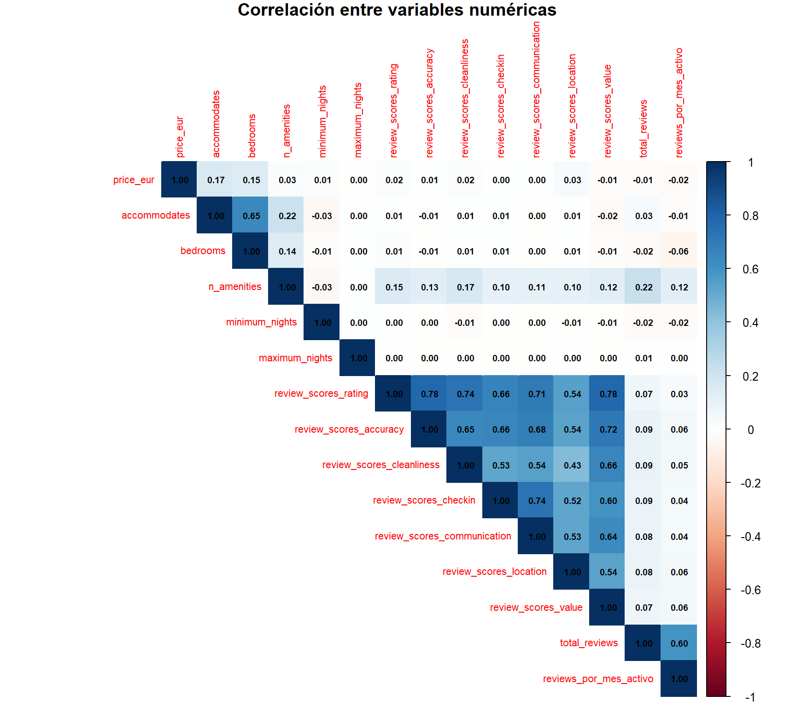
corrplot.mixed(cor_matrix, lower = "pie", upper = "number",
tl.cex = 0.7, number.cex = 0.6,
title = "Correlación entre variables numéricas (mixed)", mar = c(0,0,2,0))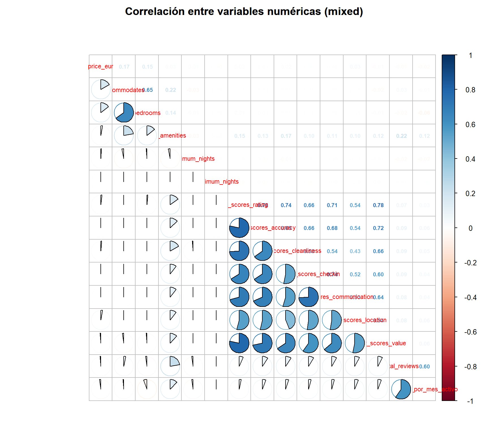
Lectura: los 7 review_scores_* están fuertemente correlacionados entre sí (0,43-0,78) pero apenas con price_eur (0,00-0,03) — confirma la necesidad de reducirlos vía PCA (sección 2) antes de usarlos en el clustering. accommodates y bedrooms correlacionan 0,65 entre sí (cierta redundancia de tamaño). total_reviews y reviews_por_mes_activo correlacionan 0,59 (redundancia moderada entre las dos variables de actividad).
ggpairs sobre las 279.599 filas completas sería inviable en tiempo y legibilidad (es una técnica pensada para conjuntos pequeños/medianos); se usa una muestra aleatoria de 2.000 listings, coloreada por room_type:
set.seed(123)
muestra_ggpairs <- listings %>%
filter(!is.na(total_reviews)) %>%
slice_sample(n = 2000) %>%
select(price_eur, accommodates, bedrooms, n_amenities,
review_scores_rating, total_reviews, room_type)
ggpairs(muestra_ggpairs, columns = 1:6, mapping = aes(color = room_type, alpha = 0.4),
title = "Relaciones entre variables clave (muestra de 2.000 listings)")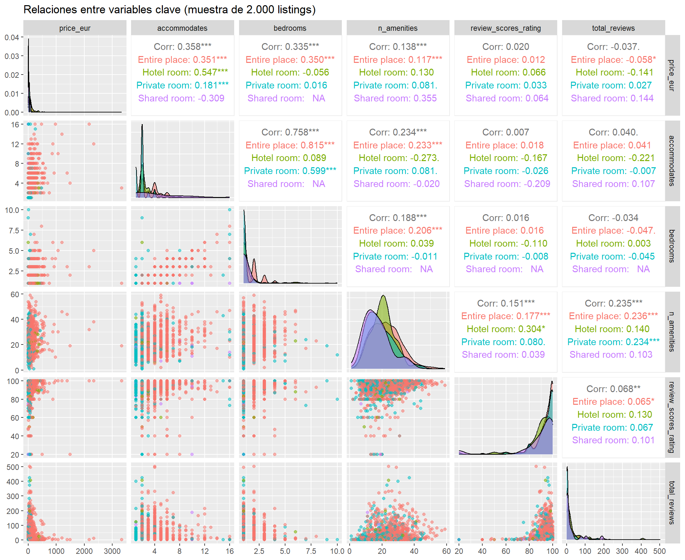
Lectura: las correlaciones desglosadas por room_type muestran comportamientos distintos según el segmento. accommodates correlaciona con price_eur con más fuerza en “Hotel room” (~0,72) y “Entire place” (~0,40-0,41) que en “Private room” (~0,20) — tiene sentido, ya que en una habitación privada el precio depende más de las condiciones del anfitrión que del tamaño total del alojamiento. “Shared room” destaca por comportarse de forma distinta al resto: su correlación entre price_eur y accommodates es negativa (-0,18), aunque con muestra pequeña dentro de los 2.000 listings, conviene no sobreinterpretar ese valor concreto. Las distribuciones (diagonal) confirman lo ya visto en la sección 1.2: review_scores_rating está muy concentrado cerca de 100 salvo por la cola de listings sin reviews.
price_eur frente a variables categóricasggplot(listings, aes(x = reorder(room_type, price_eur, FUN = median), y = price_eur)) +
geom_boxplot(outlier.alpha = 0.1) +
scale_y_log10() +
labs(title = "price_eur por room_type (escala log)", x = NULL, y = "price_eur (log)")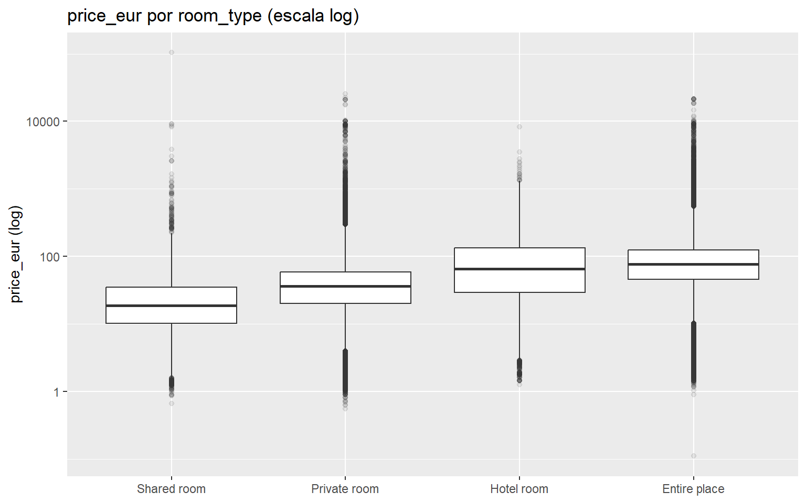
# property_type tiene 144 categorías; se toman las 10 más frecuentes
top_property_types <- listings %>%
count(property_type, sort = TRUE) %>%
slice_max(n, n = 10) %>%
pull(property_type)
listings %>%
filter(property_type %in% top_property_types) %>%
ggplot(aes(x = reorder(property_type, price_eur, FUN = median), y = price_eur)) +
geom_boxplot(outlier.alpha = 0.1) +
scale_y_log10() +
coord_flip() +
labs(title = "price_eur por property_type (top 10 más frecuentes)", x = NULL, y = "price_eur (log)")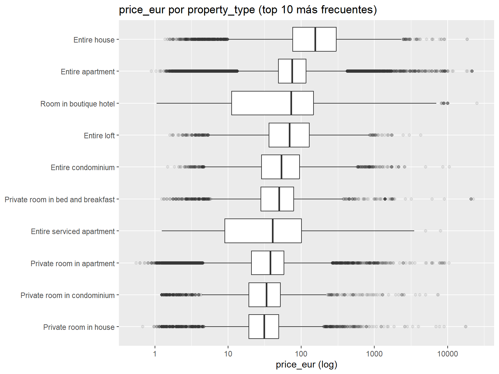
Lectura: por room_type, el orden de mediana es “Shared room” < “Private room” < “Hotel room” ≈ “Entire place” — con un solapamiento amplio entre categorías (los rangos intercuartílicos se superponen bastante), señal de que room_type por sí solo explica solo parte de la variación de precio, no lo suficiente para segmentar sin más variables. Por property_type, destaca “Entire house” con la mediana más alta del top-10, y “Room in boutique hotel” con la varianza más amplia con diferencia (rango intercuartílico mucho mayor que el resto) — coherente con que ese tipo de alojamiento agrupa desde hostales sencillos hasta hoteles boutique de lujo bajo la misma etiqueta. Las categorías “Private room in…” (apartment/condominium/house) quedan consistentemente en la parte baja, en línea con lo ya visto en room_type.
has_*has_vars <- listings %>% select(starts_with("has_"))
cor_has <- cor(has_vars, use = "pairwise.complete.obs")
corrplot(cor_has, method = "color", type = "upper",
addCoef.col = "black", number.cex = 0.6, tl.cex = 0.7,
title = "Correlación entre variables has_* (amenities e indicadores)", mar = c(0,0,1,0))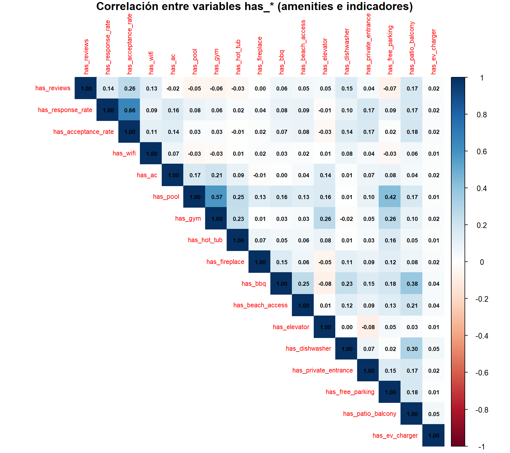
has_pool y has_gym correlacionan 0,57 entre sí — sugiere un perfil de alojamiento tipo “resort” que combina ambas amenities con frecuencia. La correlación más fuerte de toda la matriz es has_response_rate/has_acceptance_rate (0,66) — ambas proceden de la misma fuente de comportamiento del anfitrión (completar el perfil, responder consultas), así que es esperable que vayan juntas; para el clustering, esto refuerza la idea ya comentada de que quizá no haga falta llevar las dos, o de combinarlas en un único indicador de “anfitrión activo/con historial”. También destaca has_pool/has_free_parking (0,42) — sugiere un perfil de alojamiento más grande/completo (villa o casa con parking propio y piscina) — y un pequeño grupo de amenities “de exterior” que correlacionan entre sí por encima de 0,3: has_bbq/has_patio_balcony (0,38) y has_dishwasher/has_patio_balcony (0,30) — sugiere que has_patio_balcony actúa como amenity “puente” de ese perfil.
has_* con price_eur: el problema de precio_sospechosoUn primer cálculo sobre el dataset completo mostró un resultado contraintuitivo: has_reviews correlacionaba negativamente con price_eur, algo que no encaja con la lógica de mercado (tener trayectoria/reseñas debería asociarse a precios más altos o neutros, no más bajos):
cor_has_price <- listings %>%
select(starts_with("has_"), price_eur) %>%
summarise(across(starts_with("has_"), ~cor(.x, price_eur, use = "pairwise.complete.obs"))) %>%
pivot_longer(everything(), names_to = "amenity", values_to = "cor_price")
cor_has_price %>%
arrange(desc(cor_price)) %>%
ggplot(aes(x = reorder(amenity, cor_price), y = cor_price)) +
geom_col() +
coord_flip() +
labs(title = "Correlación de cada has_* con price_eur (sin filtrar)", x = NULL, y = "correlación")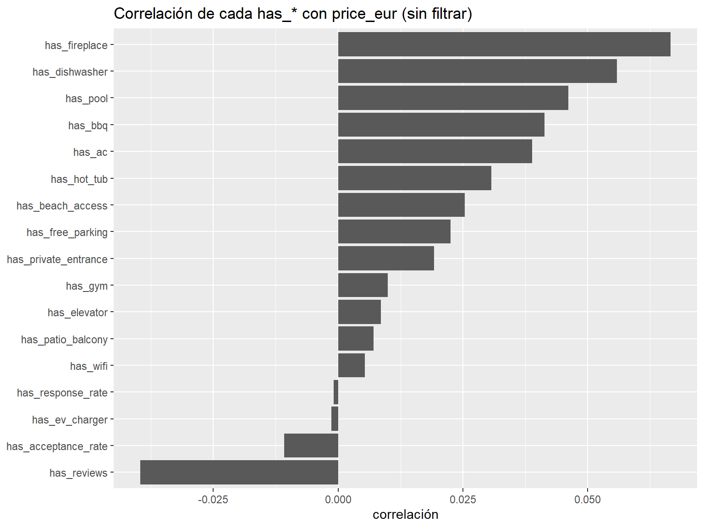
Se investiga si esto es un artefacto de los listings marcados como precio_sospechoso (precio disparatado para bloquear el calendario, concentrados entre los listings sin reviews — ver TFM_Airbnb_ETL, sección 2.1):
listings %>%
filter(!precio_sospechoso) %>%
summarise(cor_has_reviews_price = cor(has_reviews, price_eur, use = "pairwise.complete.obs"))# A tibble: 1 × 1
cor_has_reviews_price
<dbl>
1 0.0488Confirmado: la correlación pasa de -0,13 (con outliers) a +0,05 (sin outliers) — no solo cambia de signo, sino que el nuevo valor sí tiene sentido económico. Se repite el análisis completo excluyendo precio_sospechoso:
cor_has_price_filtrado <- listings %>%
filter(!precio_sospechoso) %>%
select(starts_with("has_"), price_eur) %>%
summarise(across(starts_with("has_"), ~cor(.x, price_eur, use = "pairwise.complete.obs"))) %>%
pivot_longer(everything(), names_to = "amenity", values_to = "cor_price")
cor_has_price_filtrado %>%
arrange(desc(cor_price)) %>%
ggplot(aes(x = reorder(amenity, cor_price), y = cor_price)) +
geom_col() +
coord_flip() +
labs(title = "Correlación de cada has_* con price_eur (sin precio_sospechoso)", x = NULL, y = "correlación")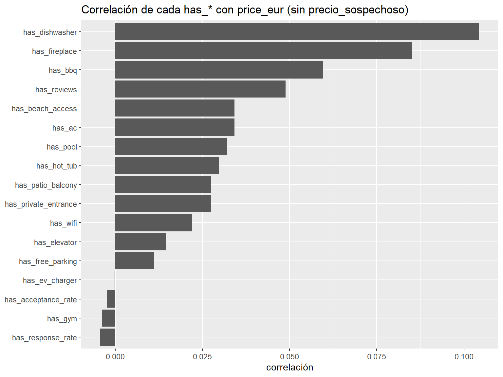
Comparación: además de has_reviews, has_gym y has_free_parking también estaban inflados por los outliers — su correlación real con price_eur es mucho menor de lo que parecía en el dataset sin filtrar. El resto de amenities mantiene un orden similar, con magnitudes generalmente mayores tras quitar el ruido de los outliers (ej. has_dishwasher sube de ~0,065 a ~0,10).
Se confirma que el resto de variables numéricas apenas se ven afectadas por este filtro (a diferencia de las has_*, más sensibles por su naturaleza binaria):
cor_matrix_filtrado <- listings %>%
filter(!precio_sospechoso) %>%
select(price_eur, accommodates, bedrooms, n_amenities, minimum_nights,
maximum_nights, review_scores_rating, review_scores_accuracy,
review_scores_cleanliness, review_scores_checkin,
review_scores_communication, review_scores_location, review_scores_value,
total_reviews, reviews_por_mes_activo) %>%
cor(use = "pairwise.complete.obs")
round(cor_matrix_filtrado - cor_matrix, 2) price_eur accommodates bedrooms n_amenities
price_eur 0.00 0.05 0.03 0.05
accommodates 0.05 0.00 -0.03 0.01
bedrooms 0.03 -0.03 0.00 0.00
n_amenities 0.05 0.01 0.00 0.00
minimum_nights 0.00 0.00 0.00 0.00
maximum_nights 0.00 0.00 0.00 0.00
review_scores_rating 0.00 0.00 0.00 0.00
review_scores_accuracy 0.00 0.00 0.00 0.00
review_scores_cleanliness 0.00 0.00 0.00 0.00
review_scores_checkin 0.00 0.00 0.00 0.00
review_scores_communication 0.00 0.00 0.00 0.00
review_scores_location 0.00 0.00 0.00 0.00
review_scores_value 0.00 0.00 0.00 0.00
total_reviews 0.00 0.00 0.00 0.00
reviews_por_mes_activo 0.00 0.00 0.00 0.00
minimum_nights maximum_nights review_scores_rating
price_eur 0 0 0
accommodates 0 0 0
bedrooms 0 0 0
n_amenities 0 0 0
minimum_nights 0 0 0
maximum_nights 0 0 0
review_scores_rating 0 0 0
review_scores_accuracy 0 0 0
review_scores_cleanliness 0 0 0
review_scores_checkin 0 0 0
review_scores_communication 0 0 0
review_scores_location 0 0 0
review_scores_value 0 0 0
total_reviews 0 0 0
reviews_por_mes_activo 0 0 0
review_scores_accuracy review_scores_cleanliness
price_eur 0 0
accommodates 0 0
bedrooms 0 0
n_amenities 0 0
minimum_nights 0 0
maximum_nights 0 0
review_scores_rating 0 0
review_scores_accuracy 0 0
review_scores_cleanliness 0 0
review_scores_checkin 0 0
review_scores_communication 0 0
review_scores_location 0 0
review_scores_value 0 0
total_reviews 0 0
reviews_por_mes_activo 0 0
review_scores_checkin review_scores_communication
price_eur 0 0
accommodates 0 0
bedrooms 0 0
n_amenities 0 0
minimum_nights 0 0
maximum_nights 0 0
review_scores_rating 0 0
review_scores_accuracy 0 0
review_scores_cleanliness 0 0
review_scores_checkin 0 0
review_scores_communication 0 0
review_scores_location 0 0
review_scores_value 0 0
total_reviews 0 0
reviews_por_mes_activo 0 0
review_scores_location review_scores_value
price_eur 0 0
accommodates 0 0
bedrooms 0 0
n_amenities 0 0
minimum_nights 0 0
maximum_nights 0 0
review_scores_rating 0 0
review_scores_accuracy 0 0
review_scores_cleanliness 0 0
review_scores_checkin 0 0
review_scores_communication 0 0
review_scores_location 0 0
review_scores_value 0 0
total_reviews 0 0
reviews_por_mes_activo 0 0
total_reviews reviews_por_mes_activo
price_eur 0 0
accommodates 0 0
bedrooms 0 0
n_amenities 0 0
minimum_nights 0 0
maximum_nights 0 0
review_scores_rating 0 0
review_scores_accuracy 0 0
review_scores_cleanliness 0 0
review_scores_checkin 0 0
review_scores_communication 0 0
review_scores_location 0 0
review_scores_value 0 0
total_reviews 0 0
reviews_por_mes_activo 0 0Solo price_eur muestra cambios (pequeños, +0,03 a +0,05, siempre al alza) frente a accommodates, bedrooms y n_amenities — el resto de la matriz no se mueve. Conclusión metodológica: de aquí en adelante se trabaja excluyendo precio_sospechoso como conjunto de referencia para correlaciones y clustering.
n_amenities frente a price_eurggplot(listings, aes(x = n_amenities, y = price_eur)) +
geom_point(alpha = 0.05) +
geom_smooth(method = "gam", formula = y ~ s(x, bs = "cs")) +
scale_y_log10() +
labs(title = "price_eur vs n_amenities", x = "n_amenities", y = "price_eur (log)")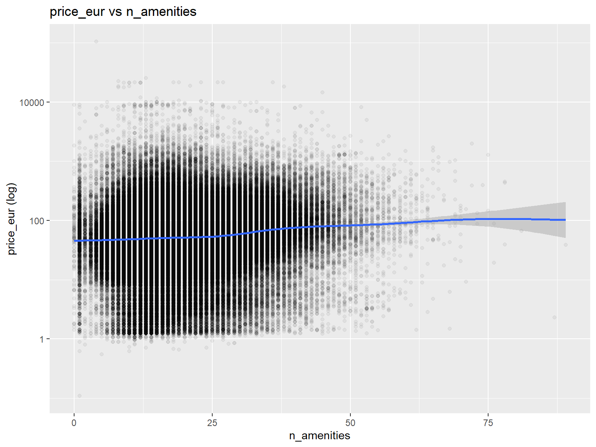
Se usa method = "gam" en vez de LOESS (el método por defecto de geom_smooth): LOESS no escala a 279.599 puntos y falla por consumo de memoria al calcular las bandas de confianza. La curva muestra una relación creciente hasta unas 50-60 amenities, con estabilización posterior (rendimientos decrecientes).
review_scores_*Las 7 variables de puntuación (review_scores_rating + 6 subpuntuaciones) están fuertemente correlacionadas entre sí (sección 1.2), pero apenas con price_eur. Se aplica Análisis de Componentes Principales para reducirlas a un número menor de componentes, con especial atención a los criterios formales para decidir cuántas retener.
El PCA solo tiene sentido sobre listings con reviews (has_reviews == TRUE); los que no tienen reviews ya vienen con NA en las 7 columnas, así que quedan excluidos de forma natural. No hace falta un filtro adicional de precio_sospechoso: por definición, esos casos ya tienen review_scores_rating NA (es una de las dos condiciones que los define), así que ya están fuera del conjunto de este análisis.
listings_reviews <- listings %>% filter(has_reviews)
review_scores_data <- listings_reviews %>%
select(review_scores_rating, review_scores_accuracy, review_scores_cleanliness,
review_scores_checkin, review_scores_communication, review_scores_location,
review_scores_value)
sum(is.na(review_scores_data))[1] 0Se usa princomp(cor = TRUE) en vez de trabajar sobre covarianzas, ya que rating está en escala 0-100 y las 6 subpuntuaciones en 0-10 (mismo criterio que se aplicaría ante cualquier conjunto de variables con escalas heterogéneas):
acp_reviews <- princomp(review_scores_data, cor = TRUE)
summary(acp_reviews)Importance of components:
Comp.1 Comp.2 Comp.3 Comp.4 Comp.5
Standard deviation 2.1898417 0.79401539 0.72865128 0.58163015 0.52068474
Proportion of Variance 0.6850581 0.09006578 0.07584753 0.04832766 0.03873037
Cumulative Proportion 0.6850581 0.77512390 0.85097142 0.89929909 0.93802946
Comp.6 Comp.7
Standard deviation 0.50731599 0.42002892
Proportion of Variance 0.03676707 0.02520347
Cumulative Proportion 0.97479653 1.00000000Se aplican cuatro criterios habituales para decidir cuántas componentes retener: autovalores superiores a 1 (criterio de Kaiser), porcentaje de varianza acumulada, estabilización en el gráfico de sedimentación (scree plot), y un contraste de hipótesis formal sobre los autovalores:
resumen <- matrix(NA, nrow = length(acp_reviews$sdev), ncol = 3)
resumen[,1] <- acp_reviews$sdev^2
resumen[,2] <- 100 * resumen[,1] / sum(resumen[,1])
resumen[,3] <- cumsum(resumen[,2])
colnames(resumen) <- c("Autovalor", "Porcentaje", "Porcentaje acumulado")
rownames(resumen) <- names(acp_reviews$sdev)
round(resumen, 2) Autovalor Porcentaje Porcentaje acumulado
Comp.1 4.80 68.51 68.51
Comp.2 0.63 9.01 77.51
Comp.3 0.53 7.58 85.10
Comp.4 0.34 4.83 89.93
Comp.5 0.27 3.87 93.80
Comp.6 0.26 3.68 97.48
Comp.7 0.18 2.52 100.00plot(resumen[,1], type = "h", main = "Scree plot: review_scores_*",
ylab = "Autovalor", xlab = "Componente", col = "red")
lines(rep(mean(resumen[,1]), length(resumen[,1])), lwd = 2, lty = 2, col = "blue")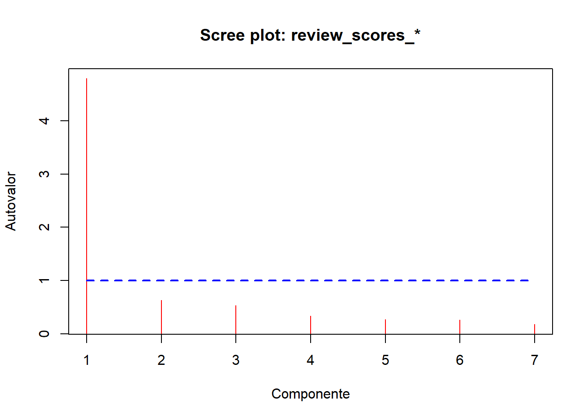
numcp <- function(n, p, m, landa) {
a <- n - ((2 + p + 11) / 6)
lmedia <- log(mean(landa[(m+1):p]))
suma <- sum(log(landa[(m+1):p]))
Q <- a * ((p - m) * lmedia - suma)
gl <- (p - m + 2) * (p - m + 1) / 2
pvalor <- 1 - pchisq(Q, gl)
list(Q = Q, gl = gl, pv = pvalor)
}
n <- nrow(review_scores_data)
p <- 7
cbind(0:(p-1), t(sapply(0:(p-1), numcp, n = n, p = p, landa = acp_reviews$sdev^2))) Q gl pv
[1,] 0 943012.4 36 0
[2,] 1 107011.8 28 0
[3,] 2 63198.62 21 0
[4,] 3 19802.44 15 0
[5,] 4 9870.749 10 0
[6,] 5 6673.404 6 0
[7,] 6 0 3 1 Los cuatro criterios no coinciden entre sí, lo cual es en sí mismo un resultado a documentar:
Decisión: se retiene 1 sola componente principal (PC1_reviews).
round(loadings(acp_reviews), 2)
Loadings:
Comp.1 Comp.2 Comp.3 Comp.4 Comp.5 Comp.6 Comp.7
review_scores_rating 0.41 0.24 0.11 0.10 0.87
review_scores_accuracy 0.40 0.11 0.32 0.80 -0.27
review_scores_cleanliness 0.36 0.54 0.25 -0.67 -0.25
review_scores_checkin 0.37 -0.31 -0.51 -0.32 -0.63
review_scores_communication 0.38 -0.23 -0.46 -0.17 0.72 -0.18
review_scores_location 0.32 -0.67 0.66 -0.13
review_scores_value 0.39 0.21 0.18 0.56 -0.56 -0.24 -0.29
Comp.1 Comp.2 Comp.3 Comp.4 Comp.5 Comp.6 Comp.7
SS loadings 0.994 1.003 1.005 0.996 0.994 0.998 1.010
Proportion Var 0.142 0.143 0.144 0.142 0.142 0.143 0.144
Cumulative Var 0.142 0.285 0.429 0.571 0.713 0.856 1.000correlaciones <- loadings(acp_reviews) %*% diag(acp_reviews$sdev)
round(correlaciones[,1:2], 2) [,1] [,2]
review_scores_rating 0.91 0.19
review_scores_accuracy 0.88 0.09
review_scores_cleanliness 0.79 0.43
review_scores_checkin 0.81 -0.25
review_scores_communication 0.84 -0.18
review_scores_location 0.69 -0.53
review_scores_value 0.86 0.16comunalidades <- apply(correlaciones[,1:2]^2, 1, sum)
round(comunalidades, 2) review_scores_rating review_scores_accuracy
0.86 0.78
review_scores_cleanliness review_scores_checkin
0.80 0.72
review_scores_communication review_scores_location
0.74 0.76
review_scores_value
0.76 Todas las variables cargan positivo en el Componente 1, de forma bastante equilibrada (0,32-0,41) — es un clásico factor de tamaño: un índice general de satisfacción del huésped que resume las 7 puntuaciones en una sola variable. Las comunalidades con las 2 primeras componentes son altas (0,72-0,86), señal de que las variables originales están bien representadas.
El Componente 2 (no retenido para el clustering) tiene una lectura cualitativa interesante: contrasta cleanliness/value (positivo) frente a location (fuertemente negativo, -0,53) — sugiere cierta compensación entre limpieza/relación calidad-precio y ubicación, aunque con solo el 9% de la varianza no es lo bastante dominante para justificar su uso en el clustering. Se deja como observación cualitativa para la memoria.
listingslistings_reviews <- listings_reviews %>%
mutate(PC1_reviews = acp_reviews$scores[,1])
listings <- listings %>%
left_join(
listings_reviews %>% select(listing_id, PC1_reviews),
by = "listing_id"
)
# Verificación: los NA deben coincidir exactamente con !has_reviews
listings %>%
summarise(
n_na_pc1 = sum(is.na(PC1_reviews)),
n_has_reviews_false = sum(!has_reviews)
)# A tibble: 1 × 2
n_na_pc1 n_has_reviews_false
<int> <int>
1 91292 91292PC1_reviews sustituye a las 7 variables review_scores_* de cara al clustering, reduciendo la redundancia detectada en el EDA relacional con una justificación metodológica formal.
Con esto, listings llega a su forma enriquecida definitiva para el resto del proyecto: las columnas del ETL (TFM_Airbnb_ETL/TFM_Reviews_ETL) más total_reviews/reviews_por_mes_activo (sección 1.1) y PC1_reviews (esta sección).
write_csv(listings, "data/listings_enriched.csv")El EDA relacional (sección 1) y el PCA (sección 2) dan una idea de qué variables podrían importar, pero de forma indirecta. Aquí se aplica una selección formal de variables con price_eur como target, comparando dos enfoques distintos: un filtro basado en correlación (CFS) y un método envolvente basado en Random Forest (RFE).
Se trabaja excluyendo precio_sospechoso (sección 1.6), ya que price_eur no es fiable en esos casos. Los NA de total_reviews/reviews_por_mes_activo se imputan a 0 (0 reviews es un valor real, no una imputación arbitraria); PC1_reviews se imputa a 0 (la media de una componente principal es 0 por construcción, un valor neutro compensado por mantener has_reviews como variable propia). property_type se deja fuera por su alta cardinalidad (144 categorías, demasiadas para estos métodos).
vars_candidatas <- listings %>%
filter(!precio_sospechoso) %>%
mutate(
total_reviews = replace_na(total_reviews, 0),
reviews_por_mes_activo = replace_na(reviews_por_mes_activo, 0),
PC1_reviews = replace_na(PC1_reviews, 0)
) %>%
select(price_eur, accommodates, bedrooms, n_amenities, minimum_nights,
maximum_nights, PC1_reviews, total_reviews, reviews_por_mes_activo,
starts_with("has_"), room_type, city) %>%
mutate(across(c(room_type, city), as.factor))
sum(is.na(vars_candidatas))[1] 0atributos_cfs <- FSelector::cfs(price_eur ~ ., data = vars_candidatas)
atributos_cfs[1] "accommodates" "bedrooms" CFS se queda solo con accommodates y bedrooms. Es un resultado coherente con el EDA relacional: ninguna variable numérica correlaciona fuerte con price_eur (todas entre 0,00 y 0,17), y CFS, al basarse en correlación lineal, tiende a quedarse corto cuando la señal individual es tan débil.
Se aplica sobre una muestra de 20.000 filas por coste computacional (a 279.599 filas, entrenar decenas de bosques aleatorios en validación cruzada sería inviable en tiempo):
set.seed(123)
muestra_rfe <- vars_candidatas %>% slice_sample(n = 20000)
x_rfe <- muestra_rfe %>% select(-price_eur)
y_rfe <- muestra_rfe$price_eur
control_rfe <- rfeControl(method = "cv", number = 10, functions = rfFuncs)
output_rfe <- rfe(x_rfe, y_rfe, sizes = c(1, 3, 5, 8, 10, 15, 20, ncol(x_rfe)),
metric = "RMSE", rfeControl = control_rfe, ntree = 200)
output_rfe
Recursive feature selection
Outer resampling method: Cross-Validated (10 fold)
Resampling performance over subset size:
Variables RMSE Rsquared MAE RMSESD RsquaredSD MAESD Selected
1 161.1 0.08093 54.86 72.19 0.07847 3.967
3 161.0 0.08366 54.46 71.54 0.06942 3.165
5 158.7 0.13414 51.56 72.61 0.09708 3.889
8 154.8 0.17750 43.12 73.44 0.12122 3.545
10 154.7 0.18318 42.14 73.89 0.12427 3.810
15 153.0 0.20569 41.59 75.23 0.13838 3.202
20 152.0 0.21348 41.01 74.90 0.13889 3.082
27 151.7 0.21811 40.97 75.41 0.14362 3.219 *
The top 5 variables (out of 27):
bedrooms, has_acceptance_rate, n_amenities, city, has_response_rateplot(output_rfe, metric = "RMSE", type = c("o", "g"))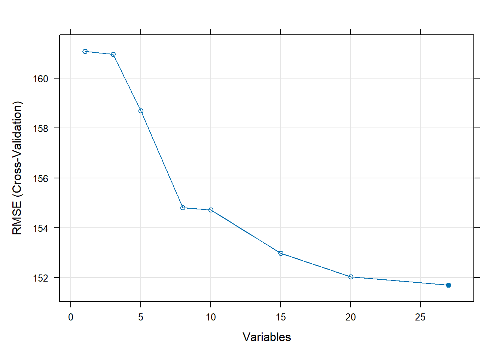
Sobre el poder predictivo (R²): con las 27 variables candidatas, el mejor resultado es R² = 0,218 — el modelo explica poco menos de una cuarta parte de la variación de price_eur, con un error medio (MAE) de ~41€ frente a una mediana de precio de ~60€. No es un fallo del análisis: es consistente con las correlaciones débiles ya detectadas en el EDA relacional, y refleja que el precio de un alojamiento depende en gran medida de factores no capturados en el dataset (calidad percibida, dinámica de oferta/demanda puntual, política de precios del anfitrión). Se documenta como limitación conocida del proyecto, relevante para la fase de modelado de precio posterior a esta.
Sobre el propio RFE: a diferencia de CFS, RFE no llega a “filtrar” nada de forma natural — caret marca como óptimo el conjunto completo de 27 variables, ya que el RMSE baja de forma monótona (aunque con rendimientos claramente decrecientes) según se añaden variables. Se aplica un criterio de codo en vez de aceptar ese óptimo ciego: el salto de mejora es grande entre 5 y 8 variables, y casi plano de 10 en adelante (154,7 con 10 variables frente a 151,7 con las 27 — una diferencia mínima para más del doble de variables). Se fija el tamaño en 10:
vars_10 <- output_rfe$control$functions$selectVar(output_rfe$variables, 10)
vars_10 [1] "bedrooms" "has_acceptance_rate" "n_amenities"
[4] "city" "has_response_rate" "has_ac"
[7] "total_reviews" "minimum_nights" "room_type"
[10] "accommodates" Las 10 variables (bedrooms, has_acceptance_rate, n_amenities, city, has_response_rate, has_ac, total_reviews, minimum_nights, room_type, accommodates) incluyen a las 2 seleccionadas por CFS, lo cual refuerza la coherencia entre ambos métodos pese a su discrepancia en cantidad.
El conjunto candidato original (27 variables) no incluía latitude/longitude ni variables de reputación del anfitrión (host_is_superhost, host_identity_verified, host_has_profile_pic, host_total_listings_count) — un hueco real en el análisis, no una decisión deliberada. Se corrige antes de dar la selección por cerrada.
neighbourhood (660 valores) sería la variable de ubicación más informativa, pero no se puede usar directamente: randomForest tiene un límite técnico de 53 categorías por variable. Las coordenadas (latitude/longitude) son la vía para capturar señal geográfica fina sin toparse con esa limitación.
moda_superhost <- names(sort(table(listings$host_is_superhost), decreasing = TRUE))[1]
moda_identity <- names(sort(table(listings$host_identity_verified), decreasing = TRUE))[1]
moda_profile_pic <- names(sort(table(listings$host_has_profile_pic), decreasing = TRUE))[1]
# host_is_superhost, host_identity_verified, host_has_profile_pic y
# host_total_listings_count tienen 165 NA cada una (0,06% del dataset) desde
# el ETL original, nunca tratadas hasta ahora por su volumen despreciable.
# Se imputan por moda (booleanas) / mediana (numérica) dado ese volumen mínimo.
vars_candidatas_ampliado <- listings %>%
filter(!precio_sospechoso) %>%
mutate(
total_reviews = replace_na(total_reviews, 0),
reviews_por_mes_activo = replace_na(reviews_por_mes_activo, 0),
PC1_reviews = replace_na(PC1_reviews, 0),
host_is_superhost = replace_na(host_is_superhost, as.logical(moda_superhost)),
host_identity_verified = replace_na(host_identity_verified, as.logical(moda_identity)),
host_has_profile_pic = replace_na(host_has_profile_pic, as.logical(moda_profile_pic)),
host_total_listings_count = replace_na(host_total_listings_count, median(host_total_listings_count, na.rm = TRUE))
) %>%
select(price_eur, accommodates, bedrooms, n_amenities, minimum_nights,
maximum_nights, PC1_reviews, total_reviews, reviews_por_mes_activo,
latitude, longitude, host_is_superhost, host_identity_verified,
host_has_profile_pic, host_total_listings_count,
starts_with("has_"), room_type, city) %>%
mutate(across(c(room_type, city), as.factor))
sum(is.na(vars_candidatas_ampliado))[1] 0Mismo protocolo riguroso que en 3.3, para que la comparación sea limpia:
set.seed(123)
muestra_rfe_ampliado <- vars_candidatas_ampliado %>% slice_sample(n = 20000)
x_rfe2 <- muestra_rfe_ampliado %>% select(-price_eur)
y_rfe2 <- muestra_rfe_ampliado$price_eur
control_rfe2 <- rfeControl(method = "cv", number = 10, functions = rfFuncs)
output_rfe2 <- rfe(x_rfe2, y_rfe2, sizes = c(1, 3, 5, 8, 10, 15, 20, ncol(x_rfe2)),
metric = "RMSE", rfeControl = control_rfe2, ntree = 200)
output_rfe2
Recursive feature selection
Outer resampling method: Cross-Validated (10 fold)
Resampling performance over subset size:
Variables RMSE Rsquared MAE RMSESD RsquaredSD MAESD Selected
1 164.1 0.03397 58.30 70.41 0.05915 3.963
3 161.4 0.08221 54.94 71.80 0.07051 3.714
5 158.8 0.12966 51.77 73.71 0.10419 4.799
8 153.9 0.18815 43.28 74.90 0.12839 3.679
10 152.1 0.21267 41.62 75.92 0.14472 3.398
15 150.9 0.23049 39.43 75.73 0.14961 2.840
20 149.6 0.24400 38.73 76.53 0.16209 3.095
33 149.5 0.24611 38.49 75.86 0.15545 3.086 *
The top 5 variables (out of 33):
bedrooms, has_ac, n_amenities, room_type, has_acceptance_rateplot(output_rfe2, metric = "RMSE", type = c("o", "g"))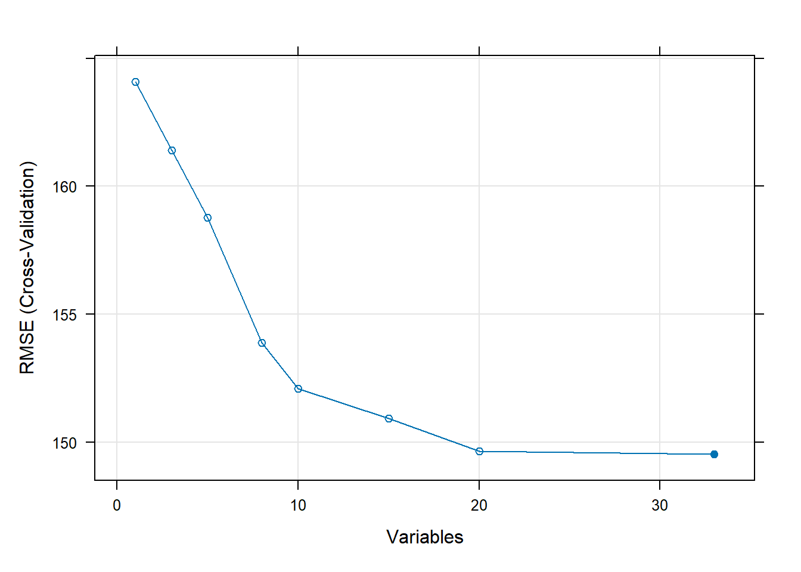
La mejora es real y consistente: R² sube de 0,218 (27 variables) a 0,246 (33 variables), con el MAE bajando de ~41€ a ~38,5€. latitude entra en el top-6 de importancia y longitude en el top-13 — ambas con peso relevante, aunque no idéntico entre sí (señal de que RFE ya les da un tratamiento distinto por sí solo, sin necesidad de combinarlas manualmente en una única variable de “ubicación” con pesos arbitrarios). De las variables de host, host_total_listings_count aporta señal real; host_is_superhost y host_has_profile_pic apenas influyen.
Aplicando el mismo criterio de codo (la mejora se aplana claramente a partir de 20 variables, con solo 0,1 punto de diferencia entre 20 y las 33 completas), se fija el tamaño en 15:
vars_15 <- output_rfe2$control$functions$selectVar(output_rfe2$variables, 15)
vars_15 [1] "bedrooms" "has_ac"
[3] "n_amenities" "room_type"
[5] "has_acceptance_rate" "latitude"
[7] "minimum_nights" "accommodates"
[9] "has_gym" "has_response_rate"
[11] "reviews_por_mes_activo" "host_total_listings_count"
[13] "longitude" "city"
[15] "host_identity_verified" Antes de dar la ubicación por suficientemente aprovechada con latitude/longitude, se exploran dos variables derivadas específicamente pensadas para capturar señal de “calidad de zona” que las coordenadas en bruto podrían no explicitar del todo: el precio medio del barrio, y la distancia al centro de la ciudad. Ambas se prueban con un Random Forest de una sola tirada (no el RFE completo) sobre las mismas 33 variables base, comparando con/sin cada una — método más rápido y suficiente para esta comprobación puntual.
Precio medio por barrio. Se calcula con el dataset completo, lo cual introduce fuga de datos deliberada (la propia variable objetivo entra en su cálculo) — el resultado que sigue es, por tanto, optimista, un techo superior no alcanzable de forma legítima sin una codificación out-of-fold:
precio_medio_barrio <- listings %>%
filter(!precio_sospechoso) %>%
group_by(neighbourhood) %>%
summarise(precio_medio_barrio = mean(price_eur), n_barrio = n())
summary(precio_medio_barrio$n_barrio) Min. 1st Qu. Median Mean 3rd Qu. Max.
1.0 10.0 54.0 414.5 277.5 14520.0 listings_con_barrio <- listings %>%
filter(!precio_sospechoso) %>%
left_join(precio_medio_barrio %>% select(neighbourhood, precio_medio_barrio), by = "neighbourhood")
vars_base_barrio <- listings_con_barrio %>%
mutate(
total_reviews = replace_na(total_reviews, 0),
reviews_por_mes_activo = replace_na(reviews_por_mes_activo, 0),
PC1_reviews = replace_na(PC1_reviews, 0),
host_is_superhost = replace_na(host_is_superhost, as.logical(moda_superhost)),
host_identity_verified = replace_na(host_identity_verified, as.logical(moda_identity)),
host_has_profile_pic = replace_na(host_has_profile_pic, as.logical(moda_profile_pic)),
host_total_listings_count = replace_na(host_total_listings_count, median(host_total_listings_count, na.rm = TRUE))
) %>%
select(price_eur, accommodates, bedrooms, n_amenities, minimum_nights, maximum_nights,
PC1_reviews, total_reviews, reviews_por_mes_activo, latitude, longitude,
host_is_superhost, host_identity_verified, host_has_profile_pic, host_total_listings_count,
precio_medio_barrio, starts_with("has_"), room_type, city) %>%
mutate(across(c(room_type, city), as.factor))
set.seed(123)
modelo_con_barrio <- randomForest(price_eur ~ ., data = vars_base_barrio %>% slice_sample(n = 20000), ntree = 200)
set.seed(123)
modelo_sin_barrio <- randomForest(price_eur ~ ., data = vars_base_barrio %>% select(-precio_medio_barrio) %>% slice_sample(n = 20000), ntree = 200)
cat("CON precio_medio_barrio:", round(tail(modelo_con_barrio$rsq, 1) * 100, 2), "% Var explained\n")CON precio_medio_barrio: 18.69 % Var explainedcat("SIN precio_medio_barrio:", round(tail(modelo_sin_barrio$rsq, 1) * 100, 2), "% Var explained\n")SIN precio_medio_barrio: 20.35 % Var explainedDiferencia de -1,66 puntos (18,69% frente a 20,35% sin la variable) — incluso con fuga de datos a su favor, no solo no mejora, sino que empeora ligeramente el resultado. Esto refuerza, si cabe con más fuerza, la conclusión de que la variable no aporta señal útil una vez que latitude/longitude ya están en el modelo (nota: al ser un Random Forest de una sola tirada, sin validación cruzada, el número exacto puede variar ligeramente entre ejecuciones según el orden de filas del dataset de partida — lo relevante aquí es que en ningún caso se observa una mejora real).
Distancia al centro de la ciudad. El “centro” se define como el centroide (media de coordenadas) de los listings de cada ciudad — una aproximación reproducible sin depender de una fuente externa, aunque no coincide necesariamente con el centro histórico/turístico real. A diferencia del precio de barrio, esta variable no usa price_eur en su cálculo, así que el resultado es limpio y fiable sin matices:
centros_ciudad <- listings %>%
filter(!precio_sospechoso) %>%
group_by(city) %>%
summarise(lat_centro = mean(latitude), lon_centro = mean(longitude))
listings_con_distancia <- listings %>%
filter(!precio_sospechoso) %>%
left_join(centros_ciudad, by = "city") %>%
rowwise() %>%
mutate(dist_centro_km = geosphere::distHaversine(c(longitude, latitude), c(lon_centro, lat_centro)) / 1000) %>%
ungroup()
summary(listings_con_distancia$dist_centro_km) Min. 1st Qu. Median Mean 3rd Qu. Max.
0.007018 2.505128 4.264742 6.175398 7.406602 83.642711 vars_base_dist <- listings_con_distancia %>%
mutate(
total_reviews = replace_na(total_reviews, 0),
reviews_por_mes_activo = replace_na(reviews_por_mes_activo, 0),
PC1_reviews = replace_na(PC1_reviews, 0),
host_is_superhost = replace_na(host_is_superhost, as.logical(moda_superhost)),
host_identity_verified = replace_na(host_identity_verified, as.logical(moda_identity)),
host_has_profile_pic = replace_na(host_has_profile_pic, as.logical(moda_profile_pic)),
host_total_listings_count = replace_na(host_total_listings_count, median(host_total_listings_count, na.rm = TRUE))
) %>%
select(price_eur, accommodates, bedrooms, n_amenities, minimum_nights, maximum_nights,
PC1_reviews, total_reviews, reviews_por_mes_activo, latitude, longitude,
host_is_superhost, host_identity_verified, host_has_profile_pic, host_total_listings_count,
dist_centro_km, starts_with("has_"), room_type, city) %>%
mutate(across(c(room_type, city), as.factor))
set.seed(123)
modelo_con_dist <- randomForest(price_eur ~ ., data = vars_base_dist %>% slice_sample(n = 20000), ntree = 200)
set.seed(123)
modelo_sin_dist <- randomForest(price_eur ~ ., data = vars_base_dist %>% select(-dist_centro_km) %>% slice_sample(n = 20000), ntree = 200)
cat("CON dist_centro_km:", round(tail(modelo_con_dist$rsq, 1) * 100, 2), "% Var explained\n")CON dist_centro_km: 18.74 % Var explainedcat("SIN dist_centro_km:", round(tail(modelo_sin_dist$rsq, 1) * 100, 2), "% Var explained\n")SIN dist_centro_km: 20.35 % Var explainedDiferencia de -1,61 puntos (18,74% frente a 20,35% sin la variable) — de nuevo sin mejora, esta vez sin el matiz de la fuga de datos (esta variable no usa price_eur en su cálculo, así que el resultado es directamente fiable). Conclusión: latitude/longitude en bruto ya capturan la señal geográfica relevante que estas dos variables derivadas intentaban aportar. Random Forest, al poder cortar el espacio de coordenadas tantas veces como necesite, aprende de forma implícita patrones geográficos finos equivalentes a “barrio caro/barato” o “cerca/lejos del centro”, sin que haga falta construir esas variables a mano — y añadirlas, en este caso, solo introduce ruido adicional en vez de señal. Ninguna de las dos entra en el conjunto final.
Antes de cerrar la selección, se revisan variables del dataset original que no habían entrado en ningún conjunto candidato hasta ahora: instant_bookable, host_response_time (categórica, más granular que la variable has_response_rate ya usada), la antigüedad del anfitrión (derivada de host_since), y property_type agrupado a sus 15 categorías más frecuentes + “Other” (en vez de excluida por completo, como en el conjunto original, por su alta cardinalidad).
listings_v2 <- listings %>%
filter(!precio_sospechoso) %>%
mutate(
host_tenure_dias = as.numeric(Sys.Date() - host_since),
property_type_agrupado = fct_lump_n(property_type, n = 15, other_level = "Other"),
# host_response_time comparte el mismo patrón de NA que has_response_rate == FALSE;
# se imputa una categoría "Sin dato" propia (es información real: nunca ha
# respondido), no la moda, que inventaría un comportamiento inexistente
host_response_time = replace_na(host_response_time, "Sin dato")
)
vars_base_v2 <- listings_v2 %>%
mutate(
total_reviews = replace_na(total_reviews, 0),
reviews_por_mes_activo = replace_na(reviews_por_mes_activo, 0),
PC1_reviews = replace_na(PC1_reviews, 0),
host_is_superhost = replace_na(host_is_superhost, as.logical(moda_superhost)),
host_identity_verified = replace_na(host_identity_verified, as.logical(moda_identity)),
host_has_profile_pic = replace_na(host_has_profile_pic, as.logical(moda_profile_pic)),
host_total_listings_count = replace_na(host_total_listings_count, median(host_total_listings_count, na.rm = TRUE)),
host_tenure_dias = replace_na(host_tenure_dias, median(host_tenure_dias, na.rm = TRUE))
) %>%
select(price_eur, accommodates, bedrooms, n_amenities, minimum_nights, maximum_nights,
PC1_reviews, total_reviews, reviews_por_mes_activo, latitude, longitude,
host_is_superhost, host_identity_verified, host_has_profile_pic,
host_total_listings_count, host_tenure_dias, instant_bookable,
host_response_time, property_type_agrupado,
starts_with("has_"), room_type, city) %>%
mutate(across(c(room_type, city, host_response_time, property_type_agrupado), as.factor))
set.seed(123)
modelo_con_v2 <- randomForest(price_eur ~ ., data = vars_base_v2 %>% slice_sample(n = 20000), ntree = 200)
vars_sin_v2 <- vars_base_v2 %>%
select(-instant_bookable, -host_response_time, -host_tenure_dias, -property_type_agrupado)
set.seed(123)
modelo_sin_v2 <- randomForest(price_eur ~ ., data = vars_sin_v2 %>% slice_sample(n = 20000), ntree = 200)
cat("CON las 4 nuevas:", round(tail(modelo_con_v2$rsq, 1) * 100, 2), "% Var explained\n")CON las 4 nuevas: 18.44 % Var explainedcat("SIN las 4 nuevas:", round(tail(modelo_sin_v2$rsq, 1) * 100, 2), "% Var explained\n")SIN las 4 nuevas: 20.35 % Var explainedDiferencia de -1,91 puntos (18,44% frente a 20,35% sin las 4 nuevas) — la mayor caída de las tres pruebas, aunque tampoco indica que estas variables sean “perjudiciales” en sí: con más variables candidatas y el mismo ntree/muestra, es razonable que el modelo tenga algo más de ruido que capturar en cada árbol. Ni instant_bookable ni host_response_time entran entre las 20 variables más importantes del modelo; host_tenure_dias sí tiene peso individual relevante pero no se traduce en mejora del conjunto, probablemente por solaparse con PC1_reviews/reviews_por_mes_activo (ambas ya capturan indirectamente cuánto tiempo lleva activo el anfitrión). Ninguna de las cuatro entra en el conjunto final.
Con todas las vías razonables exploradas (27 variables originales, ampliación con ubicación y reputación del anfitrión, variables derivadas de geografía, y una última ronda con el resto del dataset original), el techo de poder predictivo se mantiene en torno a R² ≈ 0,25. No es un fallo de la búsqueda de variables: refleja que el precio de un alojamiento depende en gran medida de factores que un dataset tabular como este no captura — calidad percibida (fotos, descripción), dinámica de oferta y demanda en tiempo real, o la política de precios dinámicos del anfitrión. Estudios de precio de Airbnb con datasets similares reportan típicamente R² en el rango de 0,3-0,5, acercándose a esa cota superior solo cuando incorporan fuentes adicionales (análisis de imágenes, texto de la descripción, datos de ocupación en tiempo real) que no están disponibles aquí.
Esta limitación no invalida el proyecto: el objetivo de negocio no es predecir el precio exacto, sino ofrecer un rango de precio razonable y entender qué características lo mueven — algo que el modelo sí consigue de forma fiable, aunque no con precisión milimétrica.
De las 15 variables del RFE ampliado, cada una tiene un papel distinto según su tipo:
bedrooms, n_amenities, accommodates, minimum_nights, reviews_por_mes_activo, latitude, longitude, host_total_listings_count (8 variables). Es la selección que se estandariza en la sección 4.has_ac, room_type, has_acceptance_rate, has_gym, has_response_rate, city, host_identity_verified), junto con el resto de has_* ya disponibles.price_eur en bruto como target; si esa fase acaba usando un target distinto (sección 3.10), es esperable — y deseable como comprobación de robustez — repetir la selección de variables con ese target definitivo antes de darla por buena sin más.Todo lo anterior modela price_eur en bruto. Surge la pregunta de si, dado que city explica por sí sola una parte importante y “trivial” de la variación de precio (recuérdese la sección 1.4: las medianas de precio difieren mucho entre las 10 ciudades), no sería más eficaz entrenar un modelo por ciudad en vez de uno único. Entrenar 10 modelos separados es arriesgado por el desequilibrio de tamaños muestrales entre ciudades (Hong Kong: 7.087 filas frente a Paris: 64.690) — hay poco margen para que un modelo aprenda de forma robusta con las ciudades más pequeñas. Una alternativa que evita fragmentar el dataset es normalizar el target por la mediana de precio de cada ciudad antes de modelar, dejando un único modelo global:
listings_test_log <- listings %>%
filter(!precio_sospechoso) %>%
group_by(city) %>%
mutate(price_relativo = price_eur / median(price_eur)) %>%
ungroup()
set.seed(123)
modelo_log_cv <- train(
log(price_relativo) ~ accommodates + bedrooms + n_amenities +
minimum_nights + room_type + has_ac + has_wifi,
data = listings_test_log,
method = "lm",
trControl = trainControl(method = "cv", number = 10)
)
modelo_log_cv$results$Rsquared[1] 0.3416855Con validación cruzada de 10 pliegues, R² = 0,342 — usando solo 7 variables (menos de la mitad de las 15 seleccionadas para price_eur en bruto) y una simple regresión lineal (no Random Forest). Es, con diferencia, la mejora más grande encontrada en toda esta fase de selección de variables: +9,6 puntos frente al 0,246 de la sección 3.5, mientras que ninguna variable individual probada (ubicación, reputación del anfitrión, variables derivadas de geografía) superó la mejora.
Esto no se desarrolla más en este documento — pertenece a la fase de modelado de precio, todavía no abierta. Se deja documentado aquí como hallazgo relevante a retomar en esa fase: modelar log(price_eur / mediana_de_su_ciudad) en vez de price_eur directo, combinado con Random Forest y el conjunto completo de variables (no solo estas 7), es la vía más prometedora identificada hasta ahora para mejorar el poder predictivo del precio.
Conviene precisar el alcance de este hallazgo: el target (price_eur o log_price_relativo) solo interviene en la selección de variables de esta sección 3 — el clustering en sí (secciones 4-5) no usa price_eur para nada, ni en la estandarización ni en el cálculo de distancias, así que los clusters obtenidos son válidos con independencia de qué target acabe usando el modelo de precio. Tampoco se rehace aquí mismo todo el CFS/RFE con log_price_relativo por una razón de secuencia, no de rigor: este hallazgo aparece al cierre de la sección de selección de variables, con ese trabajo ya completado sobre price_eur; repetirlo con el nuevo target queda para la fase de modelado, que es justo lo que se hace en la sección 3.4 de TFM_ModeloPrecio.
Las 8 variables continuas seleccionadas en la sección 3.9 se estandarizan antes del clustering por distancias: tanto la distancia euclídea como los algoritmos CLARA/k-means son sensibles a la escala, y sin este paso una variable de magnitud mucho mayor que las demás dominaría el cálculo sin ser necesariamente más relevante.
Se trabaja excluyendo precio_sospechoso, como se decidió en la sección 1.6.
vars_clustering <- listings %>%
filter(!precio_sospechoso) %>%
mutate(
reviews_por_mes_activo = replace_na(reviews_por_mes_activo, 0),
host_total_listings_count = replace_na(host_total_listings_count, median(host_total_listings_count, na.rm = TRUE))
) %>%
select(listing_id, bedrooms, n_amenities, accommodates, minimum_nights,
reviews_por_mes_activo, latitude, longitude, host_total_listings_count)
sum(is.na(vars_clustering))[1] 0summary(vars_clustering %>% select(-listing_id)) bedrooms n_amenities accommodates minimum_nights
Min. : 1.000 Min. : 0.0 Min. : 1.000 Min. : 1.000
1st Qu.: 1.000 1st Qu.:13.0 1st Qu.: 2.000 1st Qu.: 1.000
Median : 1.000 Median :18.0 Median : 2.000 Median : 2.000
Mean : 1.444 Mean :19.6 Mean : 3.224 Mean : 8.019
3rd Qu.: 2.000 3rd Qu.:26.0 3rd Qu.: 4.000 3rd Qu.: 5.000
Max. :50.000 Max. :89.0 Max. :16.000 Max. :9999.000
reviews_por_mes_activo latitude longitude
Min. : 0.0000 Min. :-34.26 Min. :-99.340
1st Qu.: 0.0000 1st Qu.:-22.96 1st Qu.:-43.197
Median : 0.6667 Median : 40.71 Median : 2.382
Mean : 0.9552 Mean : 18.99 Mean : 12.439
3rd Qu.: 1.2609 3rd Qu.: 41.91 3rd Qu.: 28.986
Max. :42.3333 Max. : 48.90 Max. :151.340
host_total_listings_count
Min. : 0.00
1st Qu.: 1.00
Median : 1.00
Mean : 21.43
3rd Qu.: 4.00
Max. :7235.00 Cuatro variables muestran una asimetría severa (diferencia enorme entre mediana y máximo): minimum_nights (mediana 2, máximo 9.999), bedrooms (mediana 1, máximo 50), host_total_listings_count (mediana 1, máximo 7.235) y reviews_por_mes_activo (mediana 0,67, máximo 42,33).
Antes de transformar, se investiga si estos máximos son errores de captura o casos reales.
listings %>% filter(!precio_sospechoso) %>% count(minimum_nights) %>% arrange(desc(n))# A tibble: 195 × 2
minimum_nights n
<dbl> <int>
1 1 90046
2 2 60361
3 3 37266
4 30 28385
5 5 13331
6 4 12577
7 7 10652
8 6 3379
9 10 2631
10 14 2220
# ℹ 185 more rowslistings %>% filter(!precio_sospechoso, minimum_nights == 9999) %>% nrow()[1] 1listings %>% filter(!precio_sospechoso, minimum_nights > 365) %>%
select(listing_id, minimum_nights, maximum_nights, room_type, city) %>%
arrange(desc(minimum_nights))# A tibble: 94 × 5
listing_id minimum_nights maximum_nights room_type city
<dbl> <dbl> <dbl> <chr> <chr>
1 8179304 9999 99999 Private room Paris
2 4204302 1250 1250 Entire place New York
3 34028716 1125 1125 Entire place Paris
4 20010285 1125 1125 Private room Sydney
5 36923173 1125 1125 Entire place Sydney
6 24868060 1124 1125 Entire place Paris
7 38487619 1124 1125 Entire place Cape Town
8 2942732 1124 1125 Entire place New York
9 41989834 1123 1124 Private room Sydney
10 5579404 1112 1125 Entire place Paris
# ℹ 84 more rowsminimum_nights = 9999 es un caso aislado (n=1, con maximum_nights = 99999 en la misma fila) — un valor disparatado fijado a propósito por el anfitrión, no un código de la plataforma.
listings %>%
filter(!precio_sospechoso, bedrooms > 10) %>%
select(listing_id, bedrooms, accommodates, property_type, room_type, price_eur, city) %>%
arrange(desc(bedrooms))# A tibble: 196 × 7
listing_id bedrooms accommodates property_type room_type price_eur city
<dbl> <dbl> <dbl> <chr> <chr> <dbl> <chr>
1 16037944 50 16 Entire apartment Entire p… 183. Mexi…
2 20118571 50 16 Private room in s… Private … 3.82 Ista…
3 6810808 50 16 Room in bed and b… Hotel ro… 92.9 Mexi…
4 43211747 50 2 Room in hotel Private … 9.31 Ista…
5 45740152 50 2 Room in hotel Private … 30.4 Mexi…
6 17777234 50 16 Room in serviced … Hotel ro… 94.2 Mexi…
7 40383664 50 1 Room in hotel Private … 1.79 Ista…
8 42215661 50 2 Room in hotel Private … 3.22 Ista…
9 45514646 50 16 Room in hotel Private … 2.14 Ista…
10 39293623 50 16 Room in boutique … Private … 161. Cape…
# ℹ 186 more rowslistings %>%
filter(!precio_sospechoso, bedrooms > 10) %>%
summarise(
n = n(),
pct_bedrooms_mayor_accommodates = mean(bedrooms > accommodates) * 100,
property_types_distintos = n_distinct(property_type)
)# A tibble: 1 × 3
n pct_bedrooms_mayor_accommodates property_types_distintos
<int> <dbl> <int>
1 196 67.9 29listings %>% filter(!precio_sospechoso) %>% count(bedrooms) %>% arrange(desc(bedrooms))# A tibble: 39 × 2
bedrooms n
<dbl> <int>
1 50 22
2 48 1
3 46 2
4 42 1
5 41 1
6 40 10
7 39 2
8 38 2
9 35 2
10 34 1
# ℹ 29 more rowsLos 22 casos de bedrooms == 50 (67,9% con más habitaciones que huéspedes) no tienen evidencia independiente de ser inválidos — es solo el valor más repetido de una cola discreta, sin ninguna convención de Airbnb que lo respalde. Descartarlo sin esa evidencia sería arbitrario: ¿por qué el 50 sí y el 49 no?
listings %>% filter(!precio_sospechoso, reviews_por_mes_activo > 20) %>%
select(listing_id, total_reviews, meses_activo, reviews_por_mes_activo, city) %>%
arrange(desc(reviews_por_mes_activo))# A tibble: 27 × 5
listing_id total_reviews meses_activo reviews_por_mes_activo city
<dbl> <int> <dbl> <dbl> <chr>
1 32011332 762 18 42.3 Paris
2 34071682 395 10 39.5 New York
3 43024746 429 11 39 Sydney
4 44799007 186 5 37.2 New York
5 32678719 753 22 34.2 New York
6 46547879 131 4 32.8 Mexico City
7 34072045 525 17 30.9 New York
8 32678720 364 12 30.3 New York
9 34072049 396 14 28.3 New York
10 32676180 598 22 27.2 New York
# ℹ 17 more rowslistings %>% filter(!precio_sospechoso) %>%
count(host_total_listings_count) %>%
arrange(desc(host_total_listings_count))# A tibble: 204 × 2
host_total_listings_count n
<dbl> <int>
1 7235 261
2 7218 28
3 7211 1
4 2739 5
5 1827 5
6 1813 66
7 1515 6
8 1507 13
9 1449 5
10 1360 1
# ℹ 194 more rowslistings %>%
filter(!precio_sospechoso, host_total_listings_count %in% c(7235, 7218)) %>%
count(host_id, host_total_listings_count)# A tibble: 2 × 3
host_id host_total_listings_count n
<dbl> <dbl> <int>
1 175128252 7218 28
2 175128252 7235 261reviews_por_mes_activo es coherente con total_reviews/meses_activo en todos los casos altos (ej. 762 reseñas en 18 meses = 42,3/mes). host_total_listings_count = 7235 resultó ser el mismo host_id (175128252) que el de 7218 — una gestora real cuyo recuento varió entre fechas de scraping de sus ~289 anuncios.
Decisión: se dejan las 4 variables sin corrección. El criterio aplicado: solo se trata como erróneo un valor con evidencia independiente de invalidez (como un límite técnico, no introducido por un anfitrión); sin esa evidencia, un valor extremo se trata como real, por minoritario que sea. CLARA, al basarse en medoides en vez de centroides, es notablemente más robusto que k-means ante estos casos. Si generan un cluster propio, se interpretará como un segmento de mercado real en la fase de perfilado, no como ruido a eliminar.
Para las variables con la asimetría más severa (minimum_nights, host_total_listings_count, bedrooms, reviews_por_mes_activo) se aplica log1p() antes de estandarizar, para comprimir la cola larga sin descartar información real:
vars_clustering_transformado <- vars_clustering %>%
mutate(
minimum_nights = log1p(minimum_nights),
host_total_listings_count = log1p(host_total_listings_count),
bedrooms = log1p(bedrooms),
reviews_por_mes_activo = log1p(reviews_por_mes_activo)
)
summary(vars_clustering_transformado %>% select(-listing_id)) bedrooms n_amenities accommodates minimum_nights
Min. :0.6931 Min. : 0.0 Min. : 1.000 Min. :0.6931
1st Qu.:0.6931 1st Qu.:13.0 1st Qu.: 2.000 1st Qu.:0.6931
Median :0.6931 Median :18.0 Median : 2.000 Median :1.0986
Mean :0.8481 Mean :19.6 Mean : 3.224 Mean :1.4900
3rd Qu.:1.0986 3rd Qu.:26.0 3rd Qu.: 4.000 3rd Qu.:1.7918
Max. :3.9318 Max. :89.0 Max. :16.000 Max. :9.2103
reviews_por_mes_activo latitude longitude
Min. :0.0000 Min. :-34.26 Min. :-99.340
1st Qu.:0.0000 1st Qu.:-22.96 1st Qu.:-43.197
Median :0.5108 Median : 40.71 Median : 2.382
Mean :0.5360 Mean : 18.99 Mean : 12.439
3rd Qu.:0.8157 3rd Qu.: 41.91 3rd Qu.: 28.986
Max. :3.7689 Max. : 48.90 Max. :151.340
host_total_listings_count
Min. :0.0000
1st Qu.:0.6931
Median :0.6931
Mean :1.2690
3rd Qu.:1.6094
Max. :8.8868 n_amenities, latitude y longitude no muestran esta asimetría severa y se dejan sin transformar.
vars_scaled <- vars_clustering_transformado %>%
select(-listing_id) %>%
scale(center = TRUE, scale = TRUE)
round(colMeans(vars_scaled), 4) bedrooms n_amenities accommodates
0 0 0
minimum_nights reviews_por_mes_activo latitude
0 0 0
longitude host_total_listings_count
0 0 round(apply(vars_scaled, 2, sd), 4) bedrooms n_amenities accommodates
1 1 1
minimum_nights reviews_por_mes_activo latitude
1 1 1
longitude host_total_listings_count
1 1 summary(as.data.frame(vars_scaled)) bedrooms n_amenities accommodates minimum_nights
Min. :-0.5712 Min. :-2.1213 Min. :-1.0914 Min. :-0.8347
1st Qu.:-0.5712 1st Qu.:-0.7140 1st Qu.:-0.6007 1st Qu.:-0.8347
Median :-0.5712 Median :-0.1727 Median :-0.6007 Median :-0.4100
Mean : 0.0000 Mean : 0.0000 Mean : 0.0000 Mean : 0.0000
3rd Qu.: 0.9230 3rd Qu.: 0.6933 3rd Qu.: 0.3807 3rd Qu.: 0.3160
Max. :11.3643 Max. : 7.5132 Max. : 6.2689 Max. : 8.0864
reviews_por_mes_activo latitude longitude
Min. :-1.08931 Min. :-1.6390 Min. :-1.5304
1st Qu.:-1.08931 1st Qu.:-1.2912 1st Qu.:-0.7618
Median :-0.05122 Median : 0.6685 Median :-0.1377
Mean : 0.00000 Mean : 0.0000 Mean : 0.0000
3rd Qu.: 0.56843 3rd Qu.: 0.7053 3rd Qu.: 0.2266
Max. : 6.56981 Max. : 0.9206 Max. : 1.9018
host_total_listings_count
Min. :-1.0807
1st Qu.:-0.4904
Median :-0.4904
Mean : 0.0000
3rd Qu.: 0.2900
Max. : 6.4876 Todas las variables quedan con media 0 y desviación típica 1. bedrooms conserva un máximo comparativamente alto (~11 desviaciones típicas) tras la transformación — residuo esperado y aceptado de los casos reales de gran capacidad discutidos en 4.3, no un error pendiente de corregir.
vars_scaled_df <- as_tibble(vars_scaled) %>%
mutate(listing_id = vars_clustering$listing_id) %>%
relocate(listing_id)
glimpse(vars_scaled_df)Rows: 273,128
Columns: 9
$ listing_id <dbl> 281420, 3705183, 4082273, 4797344, 4823489, …
$ bedrooms <dbl> -0.5712193, -0.5712193, -0.5712193, -0.57121…
$ n_amenities <dbl> -1.5800395, -1.2552798, -1.4717863, -1.58003…
$ accommodates <dbl> -0.600723, -0.600723, -0.600723, -0.600723, …
$ minimum_nights <dbl> -0.4099964, -0.4099964, -0.4099964, -0.40999…
$ reviews_por_mes_activo <dbl> 1.14326261, -0.55614267, 0.31928512, 0.31928…
$ latitude <dbl> 0.9200373, 0.9200216, 0.9198662, 0.9187764, …
$ longitude <dbl> -0.1383605, -0.1382000, -0.1385838, -0.13873…
$ host_total_listings_count <dbl> -0.4903817, -0.4903817, -0.4903817, -0.49038…Se aplica un enfoque en dos niveles: clustering jerárquico sobre perfiles agregados de las 10 ciudades (nivel mercado), y CLARA sobre los listings individuales (nivel alojamiento). El jerárquico clásico y PAM no son viables a nivel de listing individual por el tamaño del dataset (273.128 filas, tras excluir precio_sospechoso) — ambos requieren la matriz de distancias completa, inviable en memoria a esta escala; CLARA sí escala bien al trabajar por muestreo repetido.
Se agregan las 8 variables (ya transformadas con log1p() donde corresponde, sección 4.4) a nivel de ciudad, y se estandariza después de agregar — con una escala propia para las 10 filas, distinta de la estandarización a nivel listing de la sección 4.5.
perfil_ciudad <- listings %>%
filter(!precio_sospechoso) %>%
mutate(
reviews_por_mes_activo = replace_na(reviews_por_mes_activo, 0),
host_total_listings_count = replace_na(host_total_listings_count, median(host_total_listings_count, na.rm = TRUE)),
minimum_nights_log = log1p(minimum_nights),
host_total_listings_count_log = log1p(host_total_listings_count),
bedrooms_log = log1p(bedrooms),
reviews_por_mes_activo_log = log1p(reviews_por_mes_activo)
) %>%
group_by(city) %>%
summarise(
bedrooms = mean(bedrooms_log),
n_amenities = mean(n_amenities),
accommodates = mean(accommodates),
minimum_nights = mean(minimum_nights_log),
reviews_por_mes_activo = mean(reviews_por_mes_activo_log),
latitude = mean(latitude),
longitude = mean(longitude),
host_total_listings_count = mean(host_total_listings_count_log)
)
perfil_ciudad# A tibble: 10 × 9
city bedrooms n_amenities accommodates minimum_nights reviews_por_mes_activo
<chr> <dbl> <dbl> <dbl> <dbl> <dbl>
1 Bang… 0.803 19.3 3.14 1.36 0.471
2 Cape… 0.984 23.7 3.74 1.26 0.464
3 Hong… 0.787 15.1 2.78 1.86 0.437
4 Ista… 0.840 19.7 3.13 1.10 0.349
5 Mexi… 0.854 20.8 3.01 1.13 0.641
6 New … 0.799 20.5 2.77 2.75 0.591
7 Paris 0.801 17.5 3.01 1.37 0.595
8 Rio … 0.916 18.1 4.02 1.32 0.386
9 Rome 0.861 21.5 3.71 1.10 0.666
10 Sydn… 0.895 20.3 3.16 1.40 0.540
# ℹ 3 more variables: latitude <dbl>, longitude <dbl>,
# host_total_listings_count <dbl>Nota metodológica sobre la media vs. la mediana: se probó usar la mediana para las 8 variables (más robusta frente a valores extremos, y ya sabíamos por la sección 4.3 que existen anfitriones con carteras muy grandes):
perfil_ciudad_mediana <- listings %>%
filter(!precio_sospechoso) %>%
mutate(
reviews_por_mes_activo = replace_na(reviews_por_mes_activo, 0),
host_total_listings_count = replace_na(host_total_listings_count, median(host_total_listings_count, na.rm = TRUE)),
minimum_nights_log = log1p(minimum_nights),
host_total_listings_count_log = log1p(host_total_listings_count),
bedrooms_log = log1p(bedrooms),
reviews_por_mes_activo_log = log1p(reviews_por_mes_activo)
) %>%
group_by(city) %>%
summarise(
bedrooms = median(bedrooms_log),
n_amenities = median(n_amenities),
accommodates = median(accommodates),
minimum_nights = median(minimum_nights_log),
reviews_por_mes_activo = median(reviews_por_mes_activo_log),
latitude = median(latitude),
longitude = median(longitude),
host_total_listings_count = median(host_total_listings_count_log)
)
perfil_ciudad_mediana %>% select(city, bedrooms)# A tibble: 10 × 2
city bedrooms
<chr> <dbl>
1 Bangkok 0.693
2 Cape Town 0.693
3 Hong Kong 0.693
4 Istanbul 0.693
5 Mexico City 0.693
6 New York 0.693
7 Paris 0.693
8 Rio de Janeiro 0.693
9 Rome 0.693
10 Sydney 0.693perfil_ciudad_mediana_scaled <- perfil_ciudad_mediana %>%
column_to_rownames("city") %>%
scale()
round(perfil_ciudad_mediana_scaled[, "bedrooms"], 2) Bangkok Cape Town Hong Kong Istanbul Mexico City
NaN NaN NaN NaN NaN
New York Paris Rio de Janeiro Rome Sydney
NaN NaN NaN NaN NaN Esto revela un problema inesperado: bedrooms da NaN al estandarizar con mediana, porque la mediana de bedrooms es exactamente 1 en las 10 ciudades — sin variación entre ciudades, la desviación típica es 0 y scale() divide por cero. La mediana es demasiado “gruesa” para esta variable en concreto. Se opta por un tratamiento diferenciado: media para 7 variables, mediana solo para host_total_listings_count (la única con outliers extremos conocidos que podrían distorsionar la media de una ciudad):
perfil_ciudad_v2 <- listings %>%
filter(!precio_sospechoso) %>%
mutate(
reviews_por_mes_activo = replace_na(reviews_por_mes_activo, 0),
host_total_listings_count = replace_na(host_total_listings_count, median(host_total_listings_count, na.rm = TRUE)),
minimum_nights_log = log1p(minimum_nights),
host_total_listings_count_log = log1p(host_total_listings_count),
bedrooms_log = log1p(bedrooms),
reviews_por_mes_activo_log = log1p(reviews_por_mes_activo)
) %>%
group_by(city) %>%
summarise(
bedrooms = mean(bedrooms_log),
n_amenities = mean(n_amenities),
accommodates = mean(accommodates),
minimum_nights = mean(minimum_nights_log),
reviews_por_mes_activo = mean(reviews_por_mes_activo_log),
latitude = mean(latitude),
longitude = mean(longitude),
host_total_listings_count = median(host_total_listings_count_log)
)
perfil_ciudad_v2_scaled <- perfil_ciudad_v2 %>%
column_to_rownames("city") %>%
scale()
round(perfil_ciudad_v2_scaled, 2) bedrooms n_amenities accommodates minimum_nights
Bangkok -0.81 -0.14 -0.24 -0.21
Cape Town 2.07 1.72 1.15 -0.40
Hong Kong -1.07 -1.93 -1.09 0.78
Istanbul -0.23 0.01 -0.27 -0.72
Mexico City 0.00 0.48 -0.55 -0.67
New York -0.88 0.35 -1.13 2.56
Paris -0.84 -0.90 -0.55 -0.19
Rio de Janeiro 0.98 -0.66 1.81 -0.29
Rome 0.11 0.78 1.07 -0.73
Sydney 0.66 0.28 -0.20 -0.13
reviews_por_mes_activo latitude longitude
Bangkok -0.39 0.00 0.97
Cape Town -0.46 -1.47 -0.03
Hong Kong -0.71 0.26 1.14
Istanbul -1.51 0.84 0.10
Mexico City 1.17 0.17 -1.47
New York 0.71 0.83 -1.16
Paris 0.75 1.08 -0.23
Rio de Janeiro -1.18 -1.13 -0.79
Rome 1.40 0.87 -0.11
Sydney 0.24 -1.47 1.59
host_total_listings_count
Bangkok 0.87
Cape Town -0.11
Hong Kong 2.40
Istanbul -0.11
Mexico City -0.11
New York -0.90
Paris -0.90
Rio de Janeiro -0.11
Rome -0.11
Sydney -0.90
attr(,"scaled:center")
bedrooms n_amenities accommodates
0.8540776 19.6400019 3.2486039
minimum_nights reviews_por_mes_activo latitude
1.4650436 0.5140253 13.7174280
longitude host_total_listings_count
21.1845851 1.1579836
attr(,"scaled:scale")
bedrooms n_amenities accommodates
0.0629670 2.3395344 0.4278653
minimum_nights reviews_por_mes_activo latitude
0.5028913 0.1086383 32.4782943
longitude host_total_listings_count
81.6732931 0.5171541 host_total_listings_count?Con la media, Hong Kong mostraba 2,54 desviaciones típicas en host_total_listings_count; con la mediana, apenas baja a 2,40 — si un único anfitrión extremo estuviera distorsionando la cifra, la mediana debería haberlo neutralizado casi por completo. Que no lo haga sugiere un patrón de mercado real, no un artefacto de un caso aislado:
listings %>%
filter(!precio_sospechoso, city == "Hong Kong") %>%
summarise(
n_total = n(),
mediana_htlc = median(host_total_listings_count, na.rm = TRUE),
pct_hosts_mas_100 = mean(host_total_listings_count > 100, na.rm = TRUE) * 100,
n_hosts_distintos_mas_100 = n_distinct(host_id[host_total_listings_count > 100])
)# A tibble: 1 × 4
n_total mediana_htlc pct_hosts_mas_100 n_hosts_distintos_mas_100
<int> <dbl> <dbl> <int>
1 6945 10 21.3 12listings %>%
filter(!precio_sospechoso, city == "Paris") %>%
summarise(
n_total = n(),
mediana_htlc = median(host_total_listings_count, na.rm = TRUE),
pct_hosts_mas_100 = mean(host_total_listings_count > 100, na.rm = TRUE) * 100,
n_hosts_distintos_mas_100 = n_distinct(host_id[host_total_listings_count > 100])
)# A tibble: 1 × 4
n_total mediana_htlc pct_hosts_mas_100 n_hosts_distintos_mas_100
<int> <dbl> <dbl> <int>
1 63689 1 2.45 21# El anfitrión de 7.235 propiedades investigado en la sección 4.3, ¿pesa aquí?
listings %>% filter(host_id == 175128252) %>% count(city)# A tibble: 8 × 2
city n
<chr> <int>
1 Bangkok 4
2 Cape Town 15
3 Hong Kong 18
4 Istanbul 4
5 Mexico City 2
6 Rio de Janeiro 4
7 Rome 4
8 Sydney 345Confirmado: es un patrón de mercado real, no un artefacto. La mediana de host_total_listings_count en Hong Kong es 10 (frente a 1 en Paris) — el anfitrión “típico” de Hong Kong ya gestiona ~10 propiedades. El 21,3% de sus listings pertenece a anfitriones con más de 100 propiedades, repartidos entre 12 anfitriones distintos (no uno solo); en Paris, ese porcentaje es del 2,45%, repartido entre 21 anfitriones, pero sobre un mercado mucho mayor. El anfitrión de 7.235 propiedades de la sección 4.3 solo tiene 18 listings en Hong Kong — no es el causante. Hong Kong tiene un mercado genuinamente más profesionalizado (gestoras con múltiples propiedades) frente a ciudades como Paris, dominadas por el anfitrión individual — coherente con el objetivo de “segmentación geográfica de mercados urbanos” del dataset, y se conserva como hallazgo, no como problema a corregir.
dist_ciudades <- dist(perfil_ciudad_v2_scaled, method = "euclidean")
metodos <- c("complete", "average", "single", "ward.D2")
cor_cofenetica <- sapply(metodos, function(m) {
hc <- hclust(dist_ciudades, method = m)
cor(dist_ciudades, cophenetic(hc))
})
cor_cofenetica complete average single ward.D2
0.6343104 0.7633945 0.5972095 0.5676161 El método average da la mayor correlación cofenética (0,76) — decente pero no excelente, esperable con solo 10 observaciones y 8 dimensiones (poco margen para que un dendrograma capture toda la estructura). Se documenta como limitación conocida.
hc_ciudades <- hclust(dist_ciudades, method = "average")
fviz_dend(hc_ciudades, k = 4, rect = TRUE, cex = 0.8,
main = "Dendrograma de ciudades (método: average)")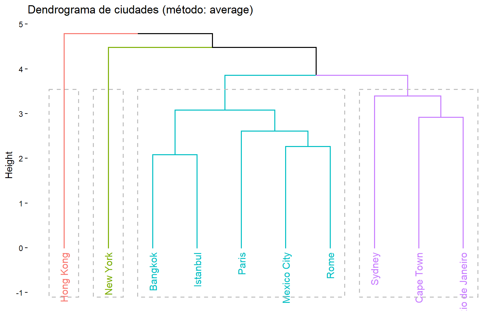
hc_ciudades$height[1] 2.082214 2.268873 2.613363 2.917373 3.078852 3.392475 3.859967 4.483830
[9] 4.789679Los saltos entre alturas consecutivas de fusión indican qué corte es más “natural” estadísticamente: el mayor salto (0,624) está entre k=3 y k=4, favoreciendo k=3. Sin embargo, k=3 deja 8 de las 10 ciudades en un único cluster — poco útil para el objetivo de segmentación geográfica. El segundo mayor salto (0,467) está en k=4, que da un reparto más equilibrado:
clusters_ciudad <- cutree(hc_ciudades, k = 4)
data.frame(city = names(clusters_ciudad), cluster = clusters_ciudad) %>% arrange(cluster) city cluster
Bangkok Bangkok 1
Istanbul Istanbul 1
Mexico City Mexico City 1
Paris Paris 1
Rome Rome 1
Cape Town Cape Town 2
Rio de Janeiro Rio de Janeiro 2
Sydney Sydney 2
Hong Kong Hong Kong 3
New York New York 4Se opta por k=4 como compromiso entre utilidad práctica y rigor estadístico, documentando explícitamente que el criterio de mayor salto favorece k=3 — misma lógica de transparencia que el criterio de codo aplicado en la sección 3 (RFE):
host_total_listings_count.minimum_nights elevado — coherente con la regulación conocida de alquileres de corta estancia en la ciudad.A esta escala (273.128 filas), el jerárquico clásico y PAM requieren la matriz de distancias completa (inviable en memoria); CLARA la evita trabajando por muestreo repetido de submuestras, sobre las que sí calcula distancias completas.
sampsize)El valor por defecto de clara() (min(n, 40 + 2k)) da submuestras de apenas 44-56 filas para los valores de k considerados — demasiado pequeñas para representar la diversidad real de 273.128 listings. Antes de fijar un valor mayor, se cronometra su coste:
tiempo_inicio <- Sys.time()
modelo_prueba <- clara(vars_scaled_df %>% select(-listing_id), k = 4,
metric = "euclidean", samples = 50, sampsize = 1000, pamLike = TRUE)
as.numeric(Sys.time() - tiempo_inicio, units = "secs")[1] 4.777884tiempo_inicio <- Sys.time()
modelo_prueba_5000 <- clara(vars_scaled_df %>% select(-listing_id), k = 4,
metric = "euclidean", samples = 50, sampsize = 5000, pamLike = TRUE)
as.numeric(Sys.time() - tiempo_inicio, units = "secs")[1] 639.4226El coste crece de forma muy superior a lineal con sampsize (CLARA calcula distancias completas dentro de cada submuestra), pero incluso sampsize = 5000 (menos del 2% del dataset) resulta asumible. Se fija sampsize = 5000 para el resto del análisis, un compromiso razonable entre representatividad y tiempo de cómputo.
set.seed(123)
resultados_k <- map_df(2:8, function(k) {
modelo <- clara(vars_scaled_df %>% select(-listing_id), k = k, metric = "euclidean",
samples = 50, sampsize = 5000, pamLike = TRUE)
tibble(k = k, avg_silhouette = modelo$silinfo$avg.width)
})
resultados_k# A tibble: 7 × 2
k avg_silhouette
<int> <dbl>
1 2 0.193
2 3 0.171
3 4 0.188
4 5 0.164
5 6 0.169
6 7 0.164
7 8 0.179ggplot(resultados_k, aes(x = k, y = avg_silhouette)) +
geom_line() +
geom_point() +
labs(title = "CLARA: silhouette medio por nº de clusters", x = "k", y = "silhouette medio")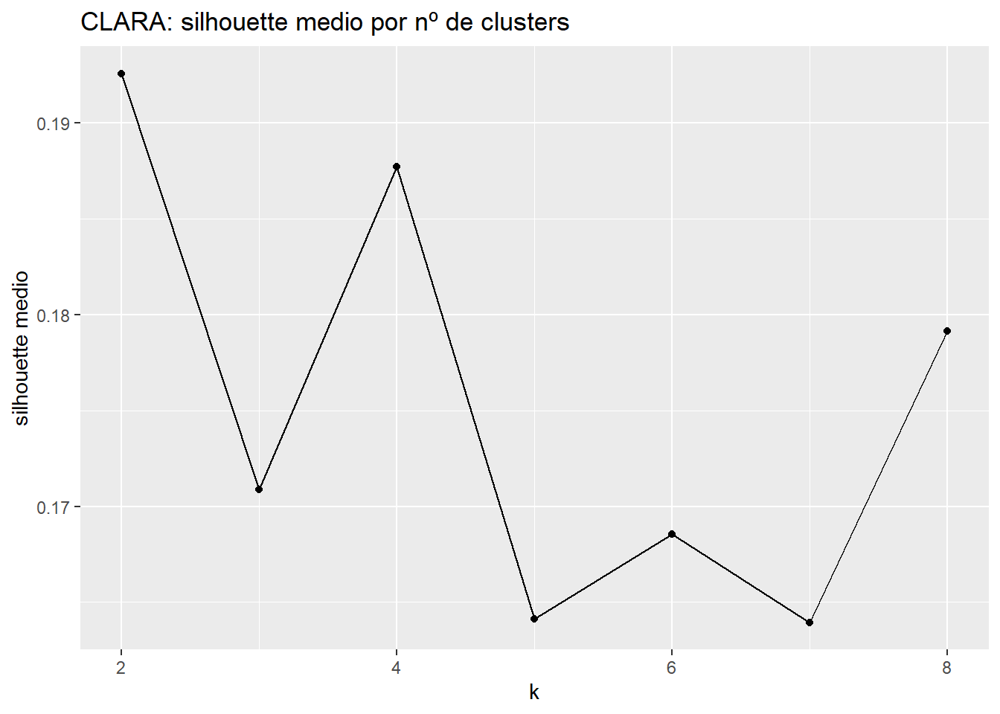
Todos los valores de silhouette están por debajo de 0,25 — según la escala de referencia de Kaufman y Rousseeuw (los autores de PAM/CLARA), esto indica que no se ha encontrado una estructura de clusters fuerte y nítidamente separada. No es un fallo del análisis: es coherente con hallazgos ya documentados en el proyecto (el EDA relacional mostró relaciones débiles entre variables; el modelo de precio de la sección 3 tiene un techo de R²≈0,25) — el mercado de alojamientos, en estas variables, se comporta como un continuo más que como categorías discretas. Se documenta como limitación, y se interpretan los clusters resultantes como segmentos con solapamiento, no compartimentos estancos.
Antes de elegir k, se comprueba que los valores de silhouette son estables y no ruido del muestreo aleatorio de CLARA, repitiendo los dos candidatos con mejor silhouette (k=2 y k=4) con una semilla distinta:
set.seed(456)
modelo_k2 <- clara(vars_scaled_df %>% select(-listing_id), k = 2, metric = "euclidean",
samples = 50, sampsize = 5000, pamLike = TRUE)
modelo_k4 <- clara(vars_scaled_df %>% select(-listing_id), k = 4, metric = "euclidean",
samples = 50, sampsize = 5000, pamLike = TRUE)
modelo_k2$silinfo$avg.width[1] 0.1925762modelo_k4$silinfo$avg.width[1] 0.1877114Los valores se mantienen prácticamente idénticos a los de la primera semilla (0,193 y 0,188 originalmente, 0,193 y 0,188 aquí) — la estructura es estable, no ruido.
modelo_k2$medoids bedrooms n_amenities accommodates minimum_nights reviews_por_mes_activo
[1,] -0.5712193 -0.1727475 -0.6007230 -0.1086708 0.1566241
[2,] 0.9230408 0.2602655 0.3806558 -0.1086708 -0.0827321
latitude longitude host_total_listings_count
[1,] 0.7053968 0.0008136646 -0.1450763
[2,] -1.6288001 0.0817398317 -0.1450763modelo_k4$medoids bedrooms n_amenities accommodates minimum_nights reviews_por_mes_activo
[1,] -0.5712193 -0.38925394 -0.6007230 -0.4099964 0.00225664
[2,] -0.5712193 -0.28100070 -0.6007230 2.0361348 -0.21114157
[3,] 0.9230408 0.15201223 0.8713453 -0.4099964 -0.02994528
[4,] -0.5712193 -0.06449424 -0.6007230 -0.1086708 -0.13418241
latitude longitude host_total_listings_count
[1,] 0.7049385 0.0004287915 -0.14507633
[2,] 0.6695436 -1.1835049557 -0.14507633
[3,] 0.7049367 0.0004523412 0.09992176
[4,] -1.6273136 1.9008639152 -0.14507633table(modelo_k2$clustering)
1 2
176642 96486 table(modelo_k4$clustering)
1 2 3 4
123304 37269 69947 42608 k=2 separa sobre todo por hemisferio y tamaño: un cluster pequeño de hemisferio norte (65%) y uno grande de hemisferio sur (35%) — una partición simple.
k=4 resulta bastante más rico: - Cluster 1 (45%): pequeño, hemisferio norte, estancia mínima corta — el perfil más común. - Cluster 2 (14%): pequeño, hemisferio norte, pero con minimum_nights muy elevado (+2,04) y longitud marcadamente occidental. - Cluster 3 (26%): grande, hemisferio norte, con host_total_listings_count ligeramente más alto — perfil más profesionalizado. - Cluster 4 (16%): pequeño, hemisferio sur, longitud muy oriental.
Hallazgo relevante: el Cluster 2 (minimum_nights disparado + longitud occidental) coincide con el mismo patrón que aisló a New York como cluster propio en el nivel jerárquico de ciudades (sección 5.1.4) — emergiendo de forma completamente independiente a nivel de listing individual, sin ninguna referencia a la ciudad de cada fila. Esta coincidencia entre ambos niveles del clustering es una validación cruzada sólida de que el patrón es real, no casualidad.
Se opta por k=4, pese a que k=2 tiene un silhouette ligerísimamente mayor (0,193 frente a 0,188 — diferencia dentro del margen de variación ya descartado como ruido): k=4 da una segmentación con más valor interpretativo y de negocio, tamaños de cluster razonablemente equilibrados (14%-45%, sin ningún grupo residual minúsculo), y coherencia con el nivel de ciudades — misma lógica de compromiso documentado que ya se aplicó al elegir k=4 en la sección 5.1.4.
accommodates y bedroomsEl EDA relacional (sección 1.2) detectó una correlación de 0,65 entre accommodates y bedrooms — con distancia euclídea, esto da al concepto de “tamaño del alojamiento” un peso implícito mayor que al resto de variables. Antes de aceptar las 8 variables tal cual, se comprueba si combinarlas en una única componente (en vez de mantener ambas) mejora el resultado, con el mismo protocolo ya usado (CLARA, k=4, sampsize=5000, semilla 456):
pca_tamano <- prcomp(vars_clustering_transformado %>% select(accommodates, bedrooms), scale. = TRUE)
summary(pca_tamano)Importance of components:
PC1 PC2
Standard deviation 1.3217 0.5031
Proportion of Variance 0.8734 0.1265
Cumulative Proportion 0.8734 1.0000vars_test_pca <- vars_clustering_transformado %>%
mutate(tamano_pc1 = pca_tamano$x[, 1]) %>%
select(tamano_pc1, n_amenities, minimum_nights,
reviews_por_mes_activo, latitude, longitude, host_total_listings_count) %>%
scale()
set.seed(456)
modelo_test_pca <- clara(vars_test_pca, k = 4, metric = "euclidean",
samples = 50, sampsize = 5000, pamLike = TRUE)
modelo_test_pca$silinfo$avg.width[1] 0.1573771La primera componente explica el 87,3% de la varianza conjunta de ambas variables — técnicamente una reducción de dimensionalidad razonable. Sin embargo, el silhouette empeora (0,157 frente a 0,188 con las 8 variables originales), no mejora. Esto confirma que la redundancia no es la causa del silhouette bajo general — que responde a relaciones débiles más amplias en el dataset, ya documentadas en el EDA relacional y en el techo de R²≈0,25 del modelo de precio — y que combinar ambas variables resta información útil al clustering en vez de eliminar ruido. Se mantienen las 8 variables originales sin combinar, decisión respaldada por esta comprobación y no solo por conveniencia.
listings_con_cluster <- vars_scaled_df %>%
mutate(cluster_listing = modelo_k4$clustering) %>%
select(listing_id, cluster_listing)
listings_con_cluster %>% count(cluster_listing)# A tibble: 4 × 2
cluster_listing n
<int> <int>
1 1 123304
2 2 37269
3 3 69947
4 4 42608Esta asignación (listings_con_cluster) se utiliza en la sección 6 para el perfilado de cada cluster con las variables has_*, room_type y city.
Las variables has_*, room_type, city y price_eur no entraron en el cálculo de distancias del clustering (sección 5), pero se usan ahora para caracterizar cada uno de los 4 clusters obtenidos — dándoles un perfil interpretable, no solo un número.
listings_perfil <- listings %>%
inner_join(listings_con_cluster, by = "listing_id")Se usan las medianas en su escala real (no la estandarizada de la sección 4), para que sea directamente interpretable. price_eur no entró en el clustering, pero se incluye aquí como validación externa:
listings_perfil %>%
group_by(cluster_listing) %>%
summarise(
n = n(),
accommodates_mediana = median(accommodates),
bedrooms_mediana = median(bedrooms),
n_amenities_mediana = median(n_amenities),
minimum_nights_mediana = median(minimum_nights),
host_total_listings_count_mediana = median(host_total_listings_count, na.rm = TRUE),
price_eur_mediana = median(price_eur)
) %>%
print(width = Inf)# A tibble: 4 × 8
cluster_listing n accommodates_mediana bedrooms_mediana
<int> <int> <dbl> <dbl>
1 1 123304 2 1
2 2 37269 2 1
3 3 69947 5 2
4 4 42608 2 1
n_amenities_mediana minimum_nights_mediana host_total_listings_count_mediana
<dbl> <dbl> <dbl>
1 17 2 1
2 16 30 1
3 23 2 2
4 19 2 1
price_eur_mediana
<dbl>
1 49
2 64.7
3 88.9
4 55.6listings_perfil %>%
group_by(cluster_listing) %>%
summarise(price_eur_mediana = median(price_eur)) %>%
ggplot(aes(x = factor(cluster_listing), y = price_eur_mediana)) +
geom_col(fill = "steelblue") +
geom_text(aes(label = paste0(round(price_eur_mediana), "€")), vjust = -0.5) +
labs(title = "price_eur mediano por cluster (no usado en el clustering)",
x = "Cluster", y = "price_eur mediano")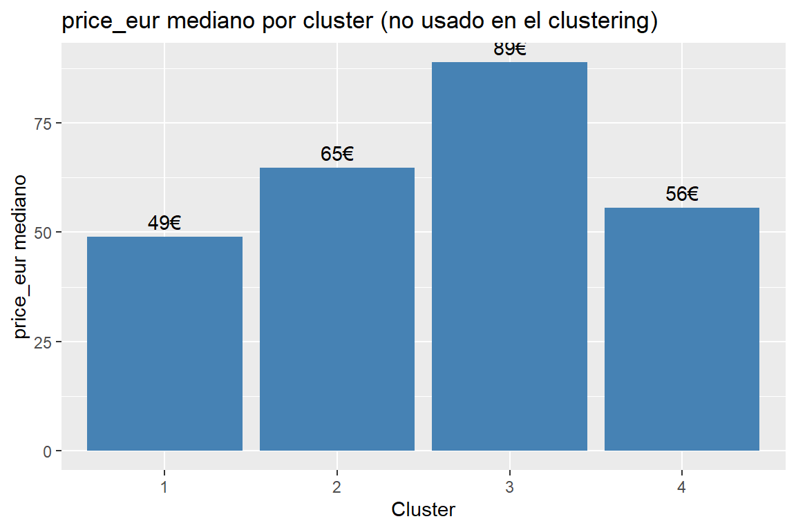
listings_perfil %>%
count(cluster_listing, city) %>%
group_by(cluster_listing) %>%
mutate(pct = round(100 * n / sum(n), 1)) %>%
arrange(cluster_listing, desc(pct)) %>%
print(n = Inf)# A tibble: 33 × 4
# Groups: cluster_listing [4]
cluster_listing city n pct
<int> <chr> <int> <dbl>
1 1 Paris 45224 36.7
2 1 Rome 16355 13.3
3 1 Istanbul 16130 13.1
4 1 Rio de Janeiro 13030 10.6
5 1 Mexico City 11773 9.5
6 1 Bangkok 9820 8
7 1 New York 7624 6.2
8 1 Hong Kong 3348 2.7
9 2 New York 24498 65.7
10 2 Paris 3859 10.4
11 2 Hong Kong 2105 5.6
12 2 Bangkok 2052 5.5
13 2 Mexico City 1726 4.6
14 2 Rio de Janeiro 1135 3
15 2 Istanbul 876 2.4
16 2 Rome 676 1.8
17 2 Cape Town 273 0.7
18 2 Sydney 69 0.2
19 3 Paris 14606 20.9
20 3 Rio de Janeiro 11286 16.1
21 3 Rome 10123 14.5
22 3 Cape Town 7998 11.4
23 3 Istanbul 6794 9.7
24 3 Mexico City 6178 8.8
25 3 Bangkok 4378 6.3
26 3 New York 4330 6.2
27 3 Sydney 2949 4.2
28 3 Hong Kong 1305 1.9
29 4 Sydney 29667 69.6
30 4 Cape Town 10196 23.9
31 4 Bangkok 2555 6
32 4 Hong Kong 187 0.4
33 4 Rio de Janeiro 3 0 listings_perfil %>%
count(cluster_listing, city) %>%
group_by(cluster_listing) %>%
mutate(pct = 100 * n / sum(n)) %>%
ggplot(aes(x = reorder(city, pct), y = pct, fill = city)) +
geom_col(show.legend = FALSE) +
coord_flip() +
facet_wrap(~ paste("Cluster", cluster_listing), scales = "free_y") +
labs(title = "Composición geográfica de cada cluster", x = NULL, y = "% del cluster")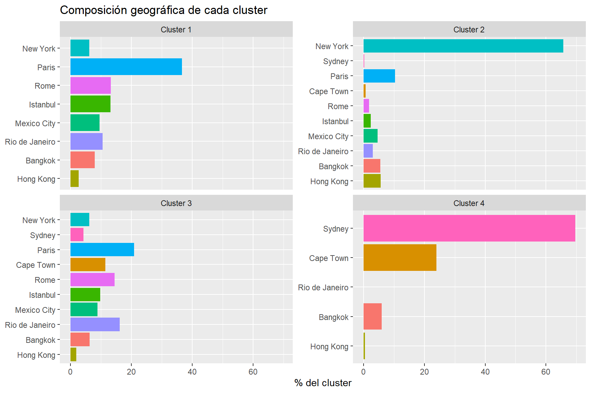
listings_perfil %>%
count(cluster_listing, room_type) %>%
group_by(cluster_listing) %>%
mutate(pct = round(100 * n / sum(n), 1)) %>%
arrange(cluster_listing, desc(pct))# A tibble: 16 × 4
# Groups: cluster_listing [4]
cluster_listing room_type n pct
<int> <chr> <int> <dbl>
1 1 Entire place 68561 55.6
2 1 Private room 47971 38.9
3 1 Hotel room 4045 3.3
4 1 Shared room 2727 2.2
5 2 Entire place 20832 55.9
6 2 Private room 15612 41.9
7 2 Shared room 725 1.9
8 2 Hotel room 100 0.3
9 3 Entire place 63284 90.5
10 3 Private room 5321 7.6
11 3 Hotel room 708 1
12 3 Shared room 634 0.9
13 4 Entire place 24473 57.4
14 4 Private room 16897 39.7
15 4 Shared room 698 1.6
16 4 Hotel room 540 1.3listings_perfil %>%
count(cluster_listing, room_type) %>%
group_by(cluster_listing) %>%
mutate(pct = 100 * n / sum(n)) %>%
ggplot(aes(x = factor(cluster_listing), y = pct, fill = room_type)) +
geom_col(position = "stack") +
labs(title = "room_type por cluster", x = "Cluster", y = "%", fill = "room_type")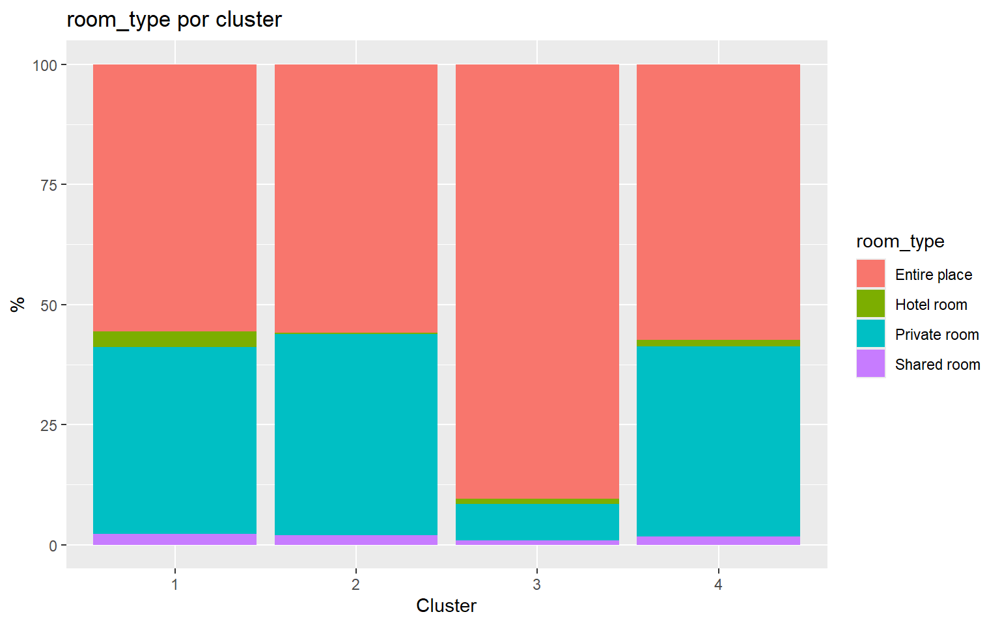
listings_perfil %>%
group_by(cluster_listing) %>%
summarise(across(starts_with("has_"), ~round(100 * mean(.x, na.rm = TRUE), 1))) %>%
pivot_longer(-cluster_listing, names_to = "amenity", values_to = "pct") %>%
pivot_wider(names_from = cluster_listing, values_from = pct, names_prefix = "cluster_")# A tibble: 17 × 5
amenity cluster_1 cluster_2 cluster_3 cluster_4
<chr> <dbl> <dbl> <dbl> <dbl>
1 has_reviews 68.8 60.6 74.4 67.6
2 has_response_rate 50.6 45.2 69 47.1
3 has_acceptance_rate 58.3 53.2 71.1 52.1
4 has_wifi 93.2 94.3 95.1 91.7
5 has_ac 43.8 71.1 56.6 43.5
6 has_pool 6.8 8.2 18.4 25.8
7 has_gym 7.6 14.2 11.4 14.7
8 has_hot_tub 2.6 3.8 6.5 7.6
9 has_fireplace 3.7 3.7 11.4 6.4
10 has_bbq 1.4 2.3 8.9 11
11 has_beach_access 2.1 1.3 7.5 8.8
12 has_elevator 37.5 32.5 41.5 27.7
13 has_dishwasher 10 13.4 27 18.6
14 has_private_entrance 19.6 19 33.7 31.5
15 has_free_parking 15.3 12.6 37 49
16 has_patio_balcony 11.9 8.3 27.7 28.9
17 has_ev_charger 0.4 0.2 0.8 0.4listings_perfil %>%
group_by(cluster_listing) %>%
summarise(across(starts_with("has_"), ~100 * mean(.x, na.rm = TRUE))) %>%
pivot_longer(-cluster_listing, names_to = "amenity", values_to = "pct") %>%
ggplot(aes(x = factor(cluster_listing), y = reorder(amenity, pct), fill = pct)) +
geom_tile() +
geom_text(aes(label = round(pct, 1)), size = 3, color = "white") +
scale_fill_viridis_c(option = "magma") +
labs(title = "Prevalencia de amenities por cluster (%)", x = "Cluster", y = NULL, fill = "%")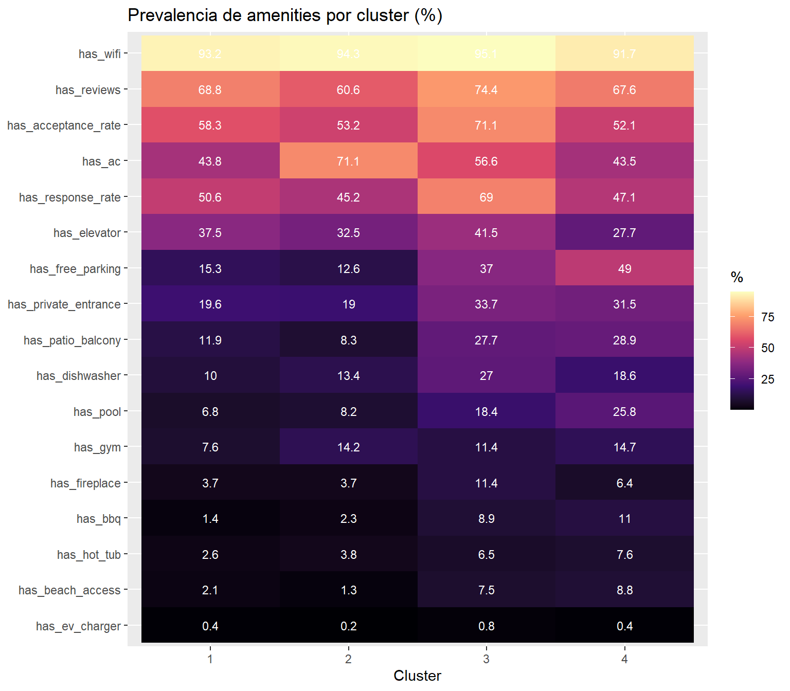
Cluster 1 — “Estándar” (123.304 listings, 45%, mediana 49€). Perfil genérico: tamaño pequeño (accommodates=2, bedrooms=1), amenities moderadas (mediana 17), mezcla de Entire place (55,6%) y Private room (38,9%). Disperso entre ciudades, liderado por Paris (36,7%). El segmento más numeroso y menos diferenciado — la “media” del mercado.
Cluster 2 — “New York regulado” (37.269, 14%, mediana 65€). 65,7% New York — confirma, con la composición real, el mismo patrón que ya había emergido de forma independiente en el clustering jerárquico de ciudades (sección 5.1.4) y en los medoides de CLARA (sección 5.2.3): minimum_nights elevado, coherente con la regulación conocida de alquileres de corta estancia de la ciudad. Destaca también has_ac (71,1%, el más alto de los 4 clusters) — coherente con el clima de la ciudad.
Cluster 3 — “Premium / gestión profesional” (69.947, 26%, mediana 89€). El cluster más diferenciado y, con diferencia, el más caro (81% más que el Cluster 1). Tamaño doble (accommodates=5, bedrooms=2), 90,5% Entire place, y domina en casi todas las amenities premium (has_pool 18,4%, has_fireplace 11,4%, has_dishwasher 27%, has_private_entrance 33,7%) y en comportamiento del anfitrión (has_response_rate 69%, has_acceptance_rate 71,1% — los más altos con diferencia). Mezcla equilibrada de ciudades, sin ninguna dominante.
Cluster 4 — “Hemisferio sur / exterior” (42.608, 16%, mediana 56€). 69,6% Sydney + 23,9% Cape Town. Destaca en amenities de exterior: has_pool (25,8%, el más alto), has_free_parking (49%, el más alto con diferencia), has_beach_access (8,8%, el más alto) — coherente con el perfil de vivienda con jardín/piscina típico de esas ciudades.
Validación del clustering mediante price_eur. La mediana de precio ordena los 4 clusters de forma coherente con su perfil de tamaño/calidad (49€ → 56€ → 65€ → 89€), pese a que price_eur no participó en ningún momento del cálculo de distancias — una segmentación construida solo a partir de características físicas y de gestión del alojamiento termina prediciendo el precio de forma consistente. Es una validación externa del clustering, en la misma línea que la coincidencia ya observada entre el nivel de ciudad y el de listing individual para el caso de New York.
precio_sospechosoSe compara el criterio estadístico simple usado en el ETL para detectar precio_sospechoso (umbral relativo por ciudad, Q3 + 3×IQR, combinado con ausencia de reviews) con Isolation Forest, un método de detección de anomalías no supervisado que evalúa varias variables a la vez.
Se usan las 7 variables continuas del clustering más price_eur (aquí sí interesa incluirlo, a diferencia del clustering, porque el objetivo es detectar anomalías de precio):
vars_iforest <- listings %>%
mutate(
reviews_por_mes_activo = replace_na(reviews_por_mes_activo, 0),
host_total_listings_count = replace_na(host_total_listings_count, median(host_total_listings_count, na.rm = TRUE))
) %>%
filter(price > 0) %>%
select(listing_id, price_eur, accommodates, bedrooms, n_amenities, minimum_nights,
reviews_por_mes_activo, host_total_listings_count, precio_sospechoso)
sum(is.na(vars_iforest))[1] 0set.seed(123)
modelo_iforest <- isotree::isolation.forest(
vars_iforest %>% select(price_eur, accommodates, bedrooms, n_amenities,
minimum_nights, reviews_por_mes_activo, host_total_listings_count),
ntrees = 200,
sample_size = 256,
ndim = 1
)
vars_iforest <- vars_iforest %>%
mutate(anomaly_score = predict(modelo_iforest, newdata = vars_iforest %>%
select(price_eur, accommodates, bedrooms, n_amenities,
minimum_nights, reviews_por_mes_activo, host_total_listings_count)))
summary(vars_iforest$anomaly_score) Min. 1st Qu. Median Mean 3rd Qu. Max.
0.3356 0.3585 0.3804 0.3982 0.4185 0.7543 Para que la comparación sea justa (conjuntos de tamaño similar, no “¿cuál encuentra más anomalías?”), se fija el umbral de Isolation Forest en el mismo porcentaje que precio_sospechoso ya identificó:
pct_precio_sospechoso <- mean(vars_iforest$precio_sospechoso) * 100
pct_precio_sospechoso[1] 2.314386umbral_iforest <- quantile(vars_iforest$anomaly_score, probs = 1 - mean(vars_iforest$precio_sospechoso))
umbral_iforest97.68561%
0.5641623 vars_iforest <- vars_iforest %>%
mutate(anomalia_iforest = anomaly_score >= umbral_iforest)ggplot(vars_iforest, aes(x = anomaly_score)) +
geom_histogram(bins = 100, fill = "steelblue") +
geom_vline(xintercept = umbral_iforest, color = "red", linetype = "dashed") +
labs(title = "Distribución del anomaly_score de Isolation Forest",
subtitle = "Línea roja: umbral fijado al mismo % que precio_sospechoso",
x = "anomaly_score", y = "nº de listings")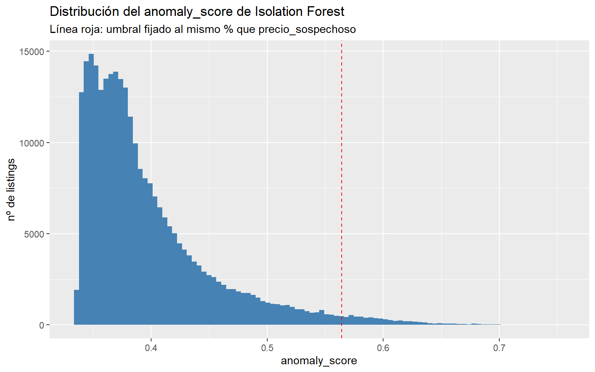
table(precio_sospechoso = vars_iforest$precio_sospechoso, anomalia_iforest = vars_iforest$anomalia_iforest) anomalia_iforest
precio_sospechoso FALSE TRUE
FALSE 268288 4840
TRUE 4840 1631vars_iforest %>%
mutate(grupo = case_when(
precio_sospechoso & anomalia_iforest ~ "Ambos coinciden",
precio_sospechoso & !anomalia_iforest ~ "Solo precio_sospechoso",
!precio_sospechoso & anomalia_iforest ~ "Solo Isolation Forest",
TRUE ~ "Ninguno"
)) %>%
filter(grupo != "Ninguno") %>%
count(grupo) %>%
ggplot(aes(x = reorder(grupo, n), y = n, fill = grupo)) +
geom_col(show.legend = FALSE) +
geom_text(aes(label = n), hjust = -0.1) +
coord_flip(clip = "off") +
labs(title = "Casos marcados por cada criterio (o ambos)", x = NULL, y = "nº de listings") +
theme(plot.margin = ggplot2::margin(5, 30, 5, 5))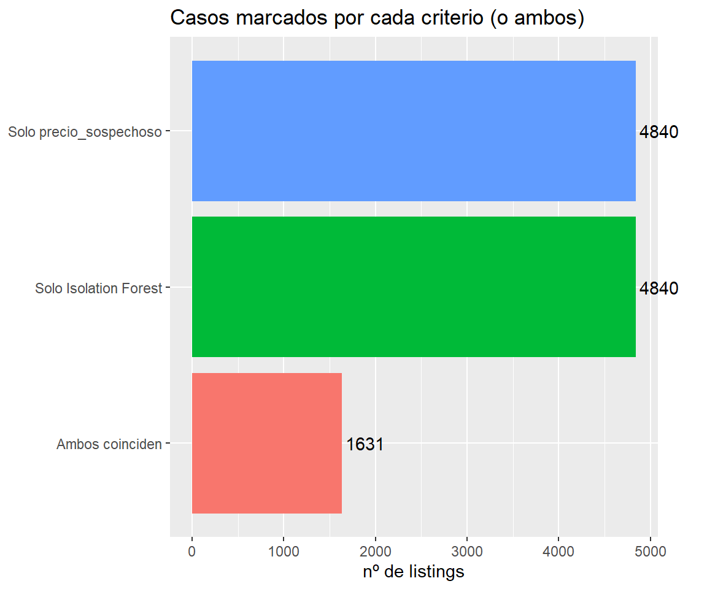
Con 6.471 casos marcados por cada método (mismo tamaño, por diseño), la coincidencia es de solo el 25,2% (1.631 de 6.471) — divergen en 3 de cada 4 casos. No es un resultado decepcionante: es la comparación metodológica que se buscaba, y revela que cada técnica detecta un tipo de anomalía distinto.
vars_iforest %>%
filter(anomalia_iforest, !precio_sospechoso) %>%
select(listing_id, price_eur, accommodates, bedrooms, n_amenities,
minimum_nights, reviews_por_mes_activo, host_total_listings_count, anomaly_score) %>%
arrange(desc(anomaly_score)) %>%
head(10) %>%
print(width = Inf)# A tibble: 10 × 9
listing_id price_eur accommodates bedrooms n_amenities minimum_nights
<dbl> <dbl> <dbl> <dbl> <dbl> <dbl>
1 38487619 1848. 10 5 40 1124
2 17931967 6657 16 8 43 2
3 21224047 6708 15 8 45 2
4 19561224 1107. 12 6 53 7
5 20010285 8998. 1 1 1 1125
6 43091554 2446. 16 10 49 3
7 45568534 2162. 16 7 56 3
8 45147818 1.79 16 6 8 365
9 33547799 13.0 16 30 10 180
10 39017258 595. 13 8 32 180
reviews_por_mes_activo host_total_listings_count anomaly_score
<dbl> <dbl> <dbl>
1 1 2 0.754
2 3.17 18 0.744
3 0.154 52 0.741
4 0.0811 189 0.731
5 0.233 1 0.729
6 1 0 0.728
7 1 0 0.723
8 0 0 0.722
9 0 1 0.719
10 1 0 0.718vars_iforest %>%
filter(precio_sospechoso, !anomalia_iforest) %>%
select(listing_id, price_eur, accommodates, bedrooms, n_amenities,
minimum_nights, reviews_por_mes_activo, host_total_listings_count, anomaly_score) %>%
arrange(anomaly_score) %>%
head(10) %>%
print(width = Inf)# A tibble: 10 × 9
listing_id price_eur accommodates bedrooms n_amenities minimum_nights
<dbl> <dbl> <dbl> <dbl> <dbl> <dbl>
1 40101926 25.7 2 1 19 1
2 24696921 33.1 2 1 18 1
3 33127618 32.0 2 1 18 1
4 10237529 25.7 2 1 19 1
5 42812351 31.3 2 1 15 1
6 41262459 33.1 2 1 15 1
7 40960736 32.0 2 1 17 1
8 45871565 48.0 2 1 15 1
9 42812184 30.5 2 1 15 1
10 3991259 27.3 2 1 17 1
reviews_por_mes_activo host_total_listings_count anomaly_score
<dbl> <dbl> <dbl>
1 0 1 0.337
2 0 2 0.337
3 0 2 0.337
4 0 0 0.337
5 0 0 0.337
6 0 0 0.337
7 0 0 0.337
8 0 0 0.337
9 0 0 0.338
10 0 1 0.338vars_iforest %>%
mutate(grupo = case_when(
precio_sospechoso & anomalia_iforest ~ "Ambos coinciden",
precio_sospechoso & !anomalia_iforest ~ "Solo precio_sospechoso",
!precio_sospechoso & anomalia_iforest ~ "Solo Isolation Forest",
TRUE ~ "Ninguno"
)) %>%
filter(grupo != "Ninguno") %>%
group_by(grupo) %>%
summarise(
n = n(),
price_eur_mediana = median(price_eur),
accommodates_mediana = median(accommodates),
host_total_listings_count_mediana = median(host_total_listings_count, na.rm = TRUE)
) %>%
print(width = Inf)# A tibble: 3 × 5
grupo n price_eur_mediana accommodates_mediana
<chr> <int> <dbl> <dbl>
1 Ambos coinciden 1631 917. 9
2 Solo Isolation Forest 4840 190. 7
3 Solo precio_sospechoso 4840 409. 4
host_total_listings_count_mediana
<dbl>
1 11
2 10
3 1vars_iforest %>%
mutate(grupo = case_when(
precio_sospechoso & anomalia_iforest ~ "Ambos coinciden",
precio_sospechoso & !anomalia_iforest ~ "Solo precio_sospechoso",
!precio_sospechoso & anomalia_iforest ~ "Solo Isolation Forest",
TRUE ~ "Ninguno"
)) %>%
arrange(grupo != "Ninguno") %>% # dibujar los casos "Ninguno" primero, para que los
ggplot(aes(x = accommodates, y = price_eur, color = grupo)) + # 3 grupos destaquen encima
geom_point(alpha = 0.5, size = 1.5) +
scale_y_log10() +
scale_color_manual(values = c("Ninguno" = "grey85", "Solo precio_sospechoso" = "#E69F00",
"Solo Isolation Forest" = "#0072B2", "Ambos coinciden" = "#D55E00")) +
labs(title = "Dos tipos de anomalía distintos, visibles en el espacio precio/tamaño",
x = "accommodates", y = "price_eur (log)", color = NULL)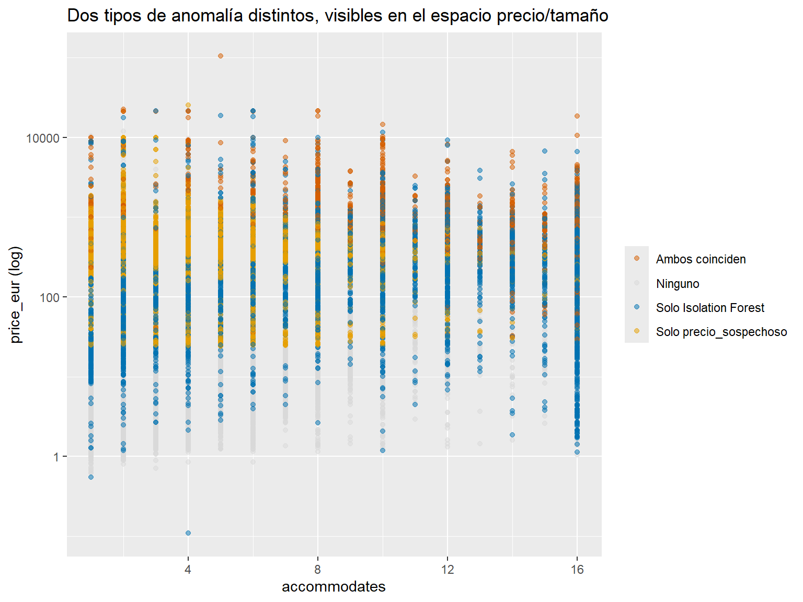
“Solo Isolation Forest” (4.840 casos): alojamientos grandes con combinaciones raras. accommodates/bedrooms altísimos (10-16 huéspedes, 5-10 habitaciones), n_amenities muy alto, y casos extremos como bedrooms=30 con solo 10 amenities — combinaciones de variables estadísticamente raras independientemente del precio. La mediana de host_total_listings_count (10) también es alta. Isolation Forest detecta alojamientos atípicos por su combinación de características físicas, no anomalías de precio.
“Solo precio_sospechoso” (4.840 casos): precios anómalos con perfil normal. Todos con accommodates=2, bedrooms=1, minimum_nights=1 — el perfil más común del dataset en todo salvo el precio. Isolation Forest, al mirar 7 variables a la vez, diluye la señal de precio entre variables normales: un alojamiento típico no destaca multivariantemente, aunque su precio sea disparatado para su ciudad. Confirma que precio_sospechoso (basado en precio relativo dentro de cada ciudad) capta un tipo de anomalía que un método multivariante genérico, sin ese contexto geográfico, no puede replicar.
“Ambos coinciden” (1.631 casos): los más extremos de todos. Precio mediano de 917€ (frente a 190€/409€ de los otros grupos) y accommodates=9 — anomalías tan fuertes que sobresalen en cualquier método.
Los dos métodos son válidos: precio_sospechoso está afinado para el problema específico de negocio (precio anómalo relativo al mercado local), mientras que Isolation Forest aporta una capa de detección de alojamientos atípicos en sus características físicas, independiente del precio — información que el criterio original no estaba diseñado para capturar. En la fase de modelado de precio (TFM_ModeloPrecio) se aplicará la exclusión de precio_sospechoso del entrenamiento, para no contaminar el aprendizaje con precios de “bloqueo de calendario”. Los casos exclusivos de Isolation Forest no se incorporan — y no deberían: son alojamientos reales y diversos (grandes, con combinaciones de amenities poco habituales), no errores de precio, así que excluirlos del entrenamiento solo empobrecería los datos sin corregir nada. Quedan aquí como hallazgo sobre la diversidad real del inventario, para tratarse de forma cualitativa en la memoria.
Con esto se cierra la fase de clustering y detección de anomalías del proyecto.